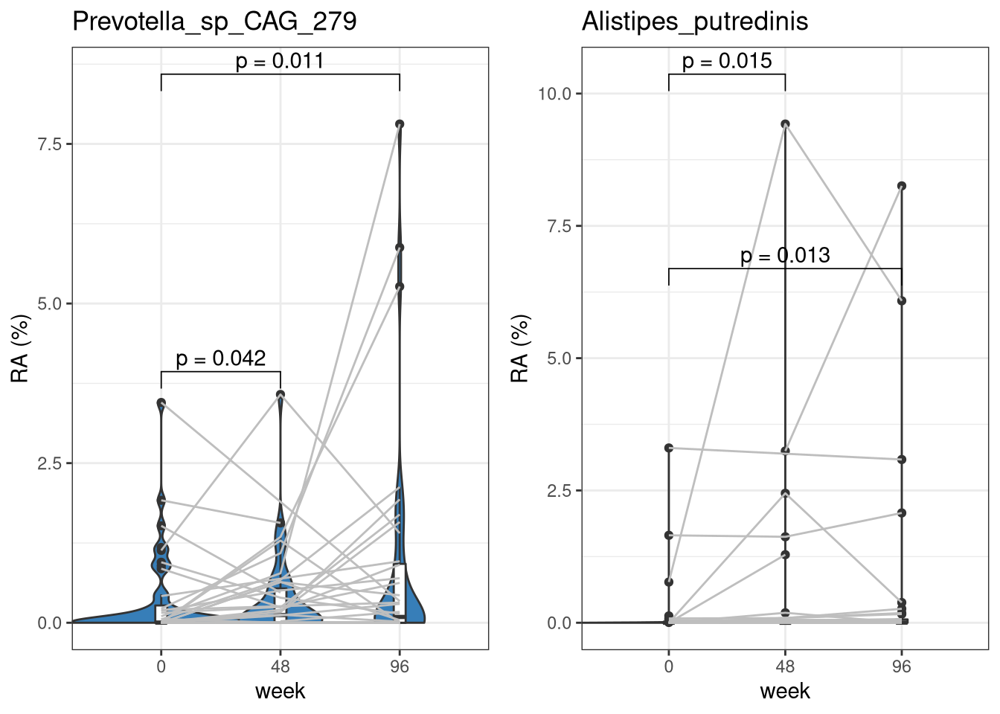
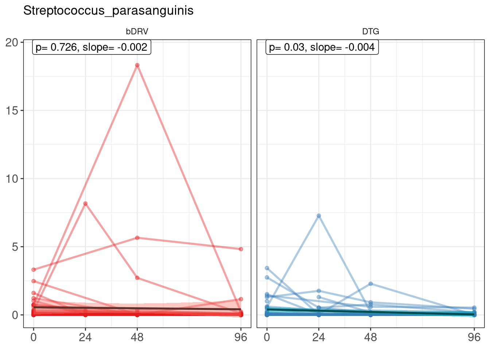
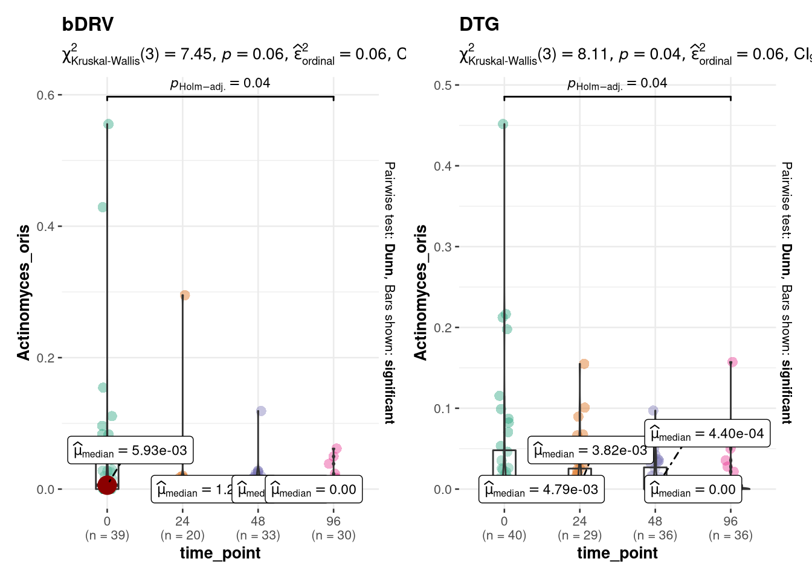
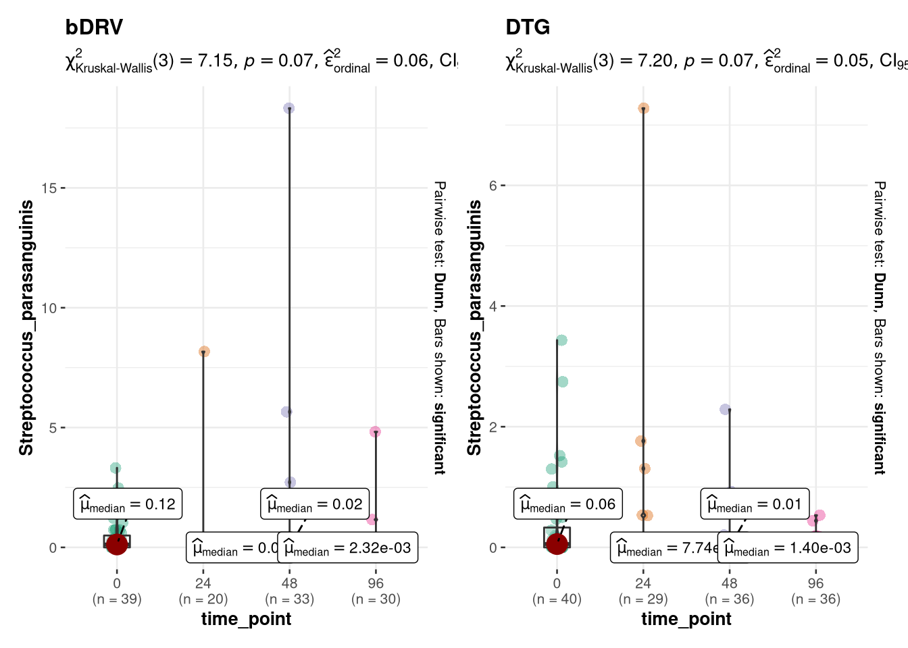

Taxonomy: Differential Abundance
Carlos Blázquez Bondia
3/23/2022
Last updated: 2022-12-16
Checks: 6 1
Knit directory: advanz4/
This reproducible R Markdown analysis was created with workflowr (version 1.7.0). The Checks tab describes the reproducibility checks that were applied when the results were created. The Past versions tab lists the development history.
Great! Since the R Markdown file has been committed to the Git repository, you know the exact version of the code that produced these results.
Great job! The global environment was empty. Objects defined in the global environment can affect the analysis in your R Markdown file in unknown ways. For reproduciblity it’s best to always run the code in an empty environment.
The command set.seed(20211203) was run prior to running the code in the R Markdown file. Setting a seed ensures that any results that rely on randomness, e.g. subsampling or permutations, are reproducible.
Great job! Recording the operating system, R version, and package versions is critical for reproducibility.
- wilcox_across_group
- wilcox_within_group
To ensure reproducibility of the results, delete the cache directory 420_Taxonomy_DA_cache and re-run the analysis. To have workflowr automatically delete the cache directory prior to building the file, set delete_cache = TRUE when running wflow_build() or wflow_publish().
Great job! Using relative paths to the files within your workflowr project makes it easier to run your code on other machines.
Great! You are using Git for version control. Tracking code development and connecting the code version to the results is critical for reproducibility.
The results in this page were generated with repository version b9a23b3. See the Past versions tab to see a history of the changes made to the R Markdown and HTML files.
Note that you need to be careful to ensure that all relevant files for the analysis have been committed to Git prior to generating the results (you can use wflow_publish or wflow_git_commit). workflowr only checks the R Markdown file, but you know if there are other scripts or data files that it depends on. Below is the status of the Git repository when the results were generated:
Ignored files:
Ignored: .RData
Ignored: .Rhistory
Ignored: .Rproj.user/
Ignored: analysis/.Rhistory
Ignored: analysis/420_Taxonomy_DA_cache/
Ignored: analysis/505_Adenovirus_Analysis_cache/
Ignored: analysis/510_Function_DA_cache/
Ignored: analysis/output/mre_data/SpeciesQuantification/Metaphlan3/NMDS/
Ignored: data/mre.rds
Ignored: data/signif_paths.rds
Unstaged changes:
Modified: analysis/316_GeneRichness_vs_CMV.Rmd
Modified: output/mre_data/CatalogMapping/IGC/lmm/lmm_time_point_by_group.pdf
Note that any generated files, e.g. HTML, png, CSS, etc., are not included in this status report because it is ok for generated content to have uncommitted changes.
These are the previous versions of the repository in which changes were made to the R Markdown (analysis/420_Taxonomy_DA.Rmd) and HTML (docs/420_Taxonomy_DA.html) files. If you’ve configured a remote Git repository (see ?wflow_git_remote), click on the hyperlinks in the table below to view the files as they were in that past version.
| File | Version | Author | Date | Message |
|---|---|---|---|---|
| Rmd | 26a797d | cblazquez | 2022-10-27 | Rendered new workflowr site |
| html | 26a797d | cblazquez | 2022-10-27 | Rendered new workflowr site |
| Rmd | e660a28 | cblazquez-irsi | 2022-10-27 | updates on various scripts |
| Rmd | 19b15b8 | cblazquez-irsi | 2022-10-14 | Added Functional DA |
| Rmd | c208fe4 | cblazquez-irsi | 2022-09-16 | created basic report Rmd |
| Rmd | 176b5e3 | cblazquez | 2022-06-14 | minor fixes on LMMs |
| html | 0aa7922 | cblazquez | 2022-06-07 | Improved S.parasanguinis interaction plots with inflammation markers |
| Rmd | 3fa20ba | cblazquez | 2022-06-02 | Added species v inflammation |
| html | 3fa20ba | cblazquez | 2022-06-02 | Added species v inflammation |
| Rmd | 1743951 | cblazquez | 2022-05-30 | Specific analysis for S.parasanguinis |
| html | 1743951 | cblazquez | 2022-05-30 | Specific analysis for S.parasanguinis |
| Rmd | 9713823 | cblazquez | 2022-05-27 | Added longitudinal DA with ANCOM in 420_Taxonomy_DA.Rmd |
| html | 9713823 | cblazquez | 2022-05-27 | Added longitudinal DA with ANCOM in 420_Taxonomy_DA.Rmd |
| Rmd | e7644ce | cblazquez | 2022-05-12 | Fixed bug where placebo samples were not removed for Prob+/- analyses |
| Rmd | bd6a522 | cblazquez | 2022-05-09 | Added long_boxplots for species discovered by Venn Diagram |
| html | bd6a522 | cblazquez | 2022-05-09 | Added long_boxplots for species discovered by Venn Diagram |
| Rmd | d6ec767 | cblazquez | 2022-05-06 | Added new comment |
| Rmd | bab1e4c | cblazquez | 2022-05-06 | STarted filterng DA species based on Venn’s diagrams |
| Rmd | 38a6169 | cblazquez | 2022-05-05 | Added longitudinalVenn diagrams. reworking long boxplots |
| html | 38a6169 | cblazquez | 2022-05-05 | Added longitudinalVenn diagrams. reworking long boxplots |
| Rmd | 18eec16 | cblazquez | 2022-05-04 | Added first plots of longitudinal DA |
| html | 18eec16 | cblazquez | 2022-05-04 | Added first plots of longitudinal DA |
| Rmd | ef074ac | cblazquez | 2022-05-04 | added mean comparisons to longitudinal DA changes |
| html | ef074ac | cblazquez | 2022-05-04 | added mean comparisons to longitudinal DA changes |
| Rmd | 2c9bb81 | Marc Noguera-Julian | 2022-05-03 | Update 420_Taxonomy_DA.Rmd |
| Rmd | f51189b | cblazquez | 2022-04-29 | started longitudinal DA section |
| Rmd | 961b1ec | cblazquez | 2022-04-29 | Added Venn diagram and plotted stats of spps with DA in all TPs (Differential Abundance) |
| html | 961b1ec | cblazquez | 2022-04-29 | Added Venn diagram and plotted stats of spps with DA in all TPs (Differential Abundance) |
| Rmd | 74908f2 | Marc Noguera-Julian | 2022-04-28 | Update 420_Taxonomy_DA.Rmd |
| Rmd | a989956 | Marc Noguera-Julian | 2022-04-28 | Update 420_Taxonomy_DA.Rmd |
| Rmd | 3f2dedb | Marc Noguera-Julian | 2022-04-28 | Update 420_Taxonomy_DA.Rmd |
| Rmd | 0ad10f5 | Marc Noguera-Julian | 2022-04-28 | Update 420_Taxonomy_DA.Rmd |
| Rmd | a143db0 | cblazquez | 2022-04-28 | Advanced on longitudinal DA |
| html | a143db0 | cblazquez | 2022-04-28 | Advanced on longitudinal DA |
| html | c20090b | cblazquez | 2022-04-01 | Compiled taxa ranking html + several bug fixes |
| Rmd | 5917250 | Marc Noguera-Julian | 2022-03-31 | Update 420_Taxonomy_DA.Rmd |
| html | e253850 | cblazquez | 2022-03-29 | worked on NMDS |
| Rmd | c51687a | cblazquez | 2022-03-28 | fixed workflowrs and gene richness issues |
| html | c51687a | cblazquez | 2022-03-28 | fixed workflowrs and gene richness issues |
| Rmd | 11c1e7d | cblazquez | 2022-03-28 | Code reorganized towards new structure |
Data import and exploration
This section should explain anyithing that may have happened during the first fase of importing and formatting data, such as any modification or additional filtering step.
# mymre <- here::here("data","mre.rds") %>%
# readRDS(.)
mymre <- aws.s3::s3readRDS(bucket = "mistral-wp6-advanz4", object ="/metagenome/WMGS/MREObject.rds", region = "eu-west-1")
# metadata <-get_meta(mymre)
metadata <- here::here("Metadata", "2022_09_29_clean_metadata_LIMS.csv") %>%
read.csv() %>%
column_to_rownames("SampleID") %>%
mutate(SampleID = rownames(.))
cat_df <-
here::here("Metadata", "CategoricalVariables.txt") %>%
read.delim(., header = T)
cat_vector <- cat_df %>%
pull(CategoricalVariable)
long_var <- here::here("Metadata", "LongitudinalVariables.txt") %>%
read.delim(., header = T) %>%
pull(LongitudinalVariable)
link_var <- here::here("Metadata", "LongitudinalVariables.txt") %>%
read.delim(., header = T) %>%
pull(LinkVariable)
num_var <- here::here("Metadata", "NumericalVariables.txt") %>%
read.delim(., header = T) %>%
pull(NumericalVariable)#### This chunk is for updating the mre internally as new variables come out. Once the final mre is done this chunk will be removed.
devtools::load_all(here::here("../WMGSPipeline"))suggested package selbal ✔suggested package DataExplorer ✔suggested package lme4 ✔suggested package merTools ✔mymre <- filter_samples(mre = mymre, sample_ids = metadata$SampleID)
mymre@metadata@metadata_df <- as.tibble(metadata)
mymre@taxa@metaphlan@phyloseq@sam_data <- metadata %>%
phyloseq::sample_data(.)
# mymre@taxa@metaphlan@phyloseq_sec@sam_data <- metadata %>%
# phyloseq::sample_data(.)
mymre@metadata@categorical_vals <- here::here("Metadata", "CategoricalVariables.txt") %>%
read.delim(., header = T) %>%
tibble()
mymre@metadata@numeric_vals <- here::here("Metadata", "NumericalVariables.txt") %>%
read.delim(., header = T) %>%
tibble()
mymre@metadata@longitudinal_vals <- here::here("Metadata", "LongitudinalVariables.txt") %>%
read.delim(., header = T) %>%
tibble()
mymre@taxa@metaphlan@phyloseq@sam_data <- phyloseq::sample_data(metadata)
mymre@taxa@metaphlan@phyloseq_sec@sam_data <- phyloseq::sample_data(metadata)# Any homebrew support function that may be written will be placed hereFirst we’ll start with a non-compositional approach which may provide potential candidate taxa for DA to be confirmed with more astringent and specific compositional approaches.
Non-compositional analysis
In this case, we’ll test for group as categorical variables. We may extend the analysis towards other cat_vars, but those were more important for basal comparisons, which already shown no great differences were found among other potential confusor variables.
Cross-group Differential Abundance
These comparisons will be between treatment groups at the same time point: one at week 0, week 48 and 96.
phy <- get_phyloseq(mymre, type = "metaphlan") %>%
phyloseq::filter_taxa(., function(x) sum(x > 0) > (0.3*length(x)), TRUE)
otu_df <-
phyloseq::otu_table(phy) %>%
t() %>%
as.data.frame() %>%
stats::setNames(phyloseq::tax_table(phy)[,"Species"]) %>%
tibble::rownames_to_column("SampleID") %>%
stats::setNames(.,stringr::str_remove_all(colnames(.), "\\[")) %>%
stats::setNames(.,stringr::str_remove_all(colnames(.), "\\]"))
stat_list <-
cat_vector %>%
purrr::set_names() %>%
purrr::map(function(cv) {
c(0,24,48,96) %>%
set_names() %>%
purrr::map_dfr(function(tp){
otu_df %>%
dplyr::select(-SampleID) %>%
colnames() %>%
purrr::set_names() %>%
purrr::map_dfr(function(sp) {
df <-
otu_df %>%
dplyr::select(SampleID, !!sym(sp)) %>%
dplyr::left_join(metadata[, c("SampleID", link_var, cv, long_var), drop = F],
by = "SampleID") %>%
dplyr::filter(!!sym(long_var) %in% tp)
if (length(unique(dplyr::pull(.data = df, !!sym(cv)))) == 2) {
test <- df %>%
rstatix::wilcox_test(., formula(paste(sp, "~", cv)), paired = F) %>%
dplyr::mutate(method = "Wilcoxon")
} else{
test <- df %>%
rstatix::kruskal_test(., formula(paste(sp, "~", cv))) %>%
dplyr::mutate(method = "Kruskal-Wallis")
}
}) %>%
rename(species = .y.) %>%
dplyr::mutate(long_var = tp) %>%
group_by(long_var) %>%
mutate(p.adj = p.adjust(p, "BH")) %>%
# filter(p.adj < .05 ) %>%
group_by(species)
})
})
DAsp <- stat_list$group %>%
filter(p<0.05) %>%
group_by(species)
## --- init MNJ
## It is interesting that Bifidobacterium species (adolescentis, longum) are consistently found as DA in all (most) timepoints
## Produce a table showing
stat_list$group %>%
filter(p<0.05) %>%
group_by(species) %>%
tally() %>%
filter(n>=2) ## Species being significant (Wilcoxon unadjusted <0.05)# A tibble: 15 × 2
species n
<chr> <int>
1 Bifidobacterium_adolescentis 3
2 Bifidobacterium_longum 3
3 Clostridium_citroniae 2
4 Coprococcus_catus 2
5 Eubacterium_eligens 2
6 Eubacterium_siraeum 2
7 Eubacterium_sp_CAG_180 2
8 Firmicutes_bacterium_CAG_110 2
9 Flavonifractor_plautii 2
10 Lachnospira_pectinoschiza 2
11 Olsenella_scatoligenes 3
12 Oscillibacter_sp_CAG_241 2
13 Parabacteroides_distasonis 2
14 Roseburia_faecis 2
15 Roseburia_hominis 2otu_df %>%
select(SampleID,Bifidobacterium_adolescentis) %>%
# select(SampleID, !!sym(DAsp)) %>%
left_join(., metadata[,c("SampleID","group","time_point")], by="SampleID") %>%
group_by(group) %>%
ggstatsplot::grouped_ggbetweenstats(.,
x="group",
y = Bifidobacterium_adolescentis,
pairwise.comparisons = T,
type="np",bf.message=NULL,
ylab = "Bifidobacterium_adolescentis(%)",
ggtheme = ggplot2::theme_bw(),
grouping.var = "time_point",plotgrid.args = NULL)
otu_df %>%
select(SampleID,Bifidobacterium_longum) %>%
# select(SampleID, !!sym(DAsp)) %>%
left_join(., metadata[,c("SampleID","group","time_point")], by="SampleID") %>%
group_by(group) %>%
ggstatsplot::grouped_ggbetweenstats(.,
x="group",
y = Bifidobacterium_longum,
pairwise.comparisons = F,
type="np",bf.message=NULL,
ylab = "Bifidobacterium_longum(%)",
ggtheme = ggplot2::theme_bw(),
grouping.var = "time_point",
plotgrid.args = list("ncol" = 4, "nrow" = 1))
| Version | Author | Date |
|---|---|---|
| 961b1ec | cblazquez | 2022-04-29 |
#
### There is a nice signal, consistent longitudinally, in Bifidobacterium Genus
phyloseq::otu_table(phy %>% phyloseq::tax_glom(.,taxrank="Genus")) %>%
t() %>%
as.data.frame() %>%
stats::setNames(phyloseq::tax_table(phy %>% phyloseq::tax_glom(.,taxrank="Genus"))[,"Genus"]) %>%
tibble::rownames_to_column("SampleID") %>%
stats::setNames(.,stringr::str_remove_all(colnames(.), "\\[")) %>%
stats::setNames(.,stringr::str_remove_all(colnames(.), "\\]")) %>%
select(SampleID,Bifidobacterium) %>%
# select(SampleID, !!sym(DAsp)) %>%
left_join(., metadata[,c("SampleID","group","time_point")], by="SampleID") %>%
group_by(group) %>%
ggstatsplot::grouped_ggbetweenstats(.,
x="group",
y = Bifidobacterium,
pairwise.comparisons = F,
type="np", bf.message=NULL,
ylab = "Bifidobacterium(%)",
ggtheme = ggplot2::theme_bw(),
grouping.var = "time_point",plotgrid.args = NULL) # %>%
# ggsave(.,filename = "~/Downloads/plot4Carlos_Bifidobacterium.pdf")
otu_df %>%
select(SampleID,Olsenella_scatoligenes) %>%
# select(SampleID, !!sym(DAsp)) %>%
left_join(., metadata[,c("SampleID","group","time_point")], by="SampleID") %>%
group_by(group) %>%
ggstatsplot::grouped_ggbetweenstats(.,
x="group",
y = Olsenella_scatoligenes,
pairwise.comparisons = F,
type="np",bf.message=NULL,
ylab = "Olsenella_scatoligenes(%)",
ggtheme = ggplot2::theme_bw(),
grouping.var = "time_point",plotgrid.args = NULL)### Show how many species are differential in at least two of the timepoints in each cat var. Risk_group should result in many species showing that kins of signal. See Venn section below.
### --- end MNJ
Warning: The above code chunk cached its results, but it won’t be re-run if previous chunks it depends on are updated. If you need to use caching, it is highly recommended to also set knitr::opts_chunk$set(autodep = TRUE) at the top of the file (in a chunk that is not cached). Alternatively, you can customize the option dependson for each individual chunk that is cached. Using either autodep or dependson will remove this warning. See the knitr cache options for more details.
Bifidobacterium adolescentis, Bifidobacterium longum and Olsenella scatoligenes were significant in all timepoints. Let’s check the actual abundances per group and timepoint:
source("code/group_comparisons.R")
sp_vec <- c("Bifidobacterium_adolescentis","Bifidobacterium_longum","Olsenella_scatoligenes")
sp_res <-
otu_df %>%
left_join(metadata, by = "SampleID") %>%
# select(SampleID, record_id, time_point, group, abundance = !!sym(sp)) %>%
get_group_comparisons(.,
link_var = "record_id",
long_var = "time_point",
cat_vector = "group",
num_vector = c("Bifidobacterium_adolescentis","Bifidobacterium_longum","Olsenella_scatoligenes"),
comps = c("DRV/r", "DTG"),
type = "categorical")
sp_res$group$Bifidobacterium_adolescentis %>% pluck("stats") %>% as.data.frame() cat_var long_var median upper_ci lower_ci iqr
1 DRV/r 0 0.000000 0.5821767 0 0.5821767
2 DRV/r 24 0.000000 0.0272200 0 0.0272200
3 DRV/r 48 0.000000 0.3525667 0 0.3525667
4 DRV/r 96 0.000000 0.2700283 0 0.2700283
5 DTG 0 0.000000 0.8171858 0 0.8171858
6 DTG 24 0.235300 2.2562800 0 2.2562800
7 DTG 48 1.942740 5.1234025 0 5.1234025
8 DTG 96 0.744225 5.3758367 0 5.3758367sp_res$group$Bifidobacterium_longum %>% pluck("stats") %>% as.data.frame() cat_var long_var median upper_ci lower_ci iqr
1 DRV/r 0 0.000000 1.2301150 0 1.2301150
2 DRV/r 24 0.000000 0.3188525 0 0.3188525
3 DRV/r 48 0.005150 0.5420533 0 0.5420533
4 DRV/r 96 0.000000 0.2459417 0 0.2459417
5 DTG 0 0.375410 2.8079758 0 2.8079758
6 DTG 24 0.405140 2.1701767 0 2.1701767
7 DTG 48 0.578600 3.0563892 0 3.0563892
8 DTG 96 0.220755 2.7178458 0 2.7178458sp_res$group$Olsenella_scatoligenes %>% pluck("stats") %>% as.data.frame() cat_var long_var median upper_ci lower_ci iqr
1 DRV/r 0 0.000000 0.011148333 0 0.011148333
2 DRV/r 24 0.000000 0.009085000 0 0.009085000
3 DRV/r 48 0.000000 0.006866667 0 0.006866667
4 DRV/r 96 0.000000 0.002895000 0 0.002895000
5 DTG 0 0.000000 0.007582500 0 0.007582500
6 DTG 24 0.002460 0.021300000 0 0.021300000
7 DTG 48 0.007115 0.035651667 0 0.035651667
8 DTG 96 0.005570 0.022184167 0 0.022184167Comparison of significant species
Following Venn’s diagram to detect group_specific DA taxa (Marc’s addition, moved here as I thought it made more sense structurally)
### MNJ: Provide a table of species theat appear in the Venn's diagram.
maxn <- DAsp %>%
select(species,long_var) %>%
group_by(long_var) %>%
count() %>%
pull(n) %>%
max
unique(DAsp$long_var) %>%
set_names() %>%
map_dfc(function(tp) {
vec <- DAsp %>%
dplyr::select(species, long_var) %>%
dplyr::filter(long_var == tp) %>%
dplyr::pull(species)
if (length(vec) < maxn) {
vec <- vctrs::vec_c(vec, rep(NA, maxn - length(vec)))
return(vec)
} else{
return(vec)
}
}) %>%
ggVennDiagram::ggVennDiagram(., show_intersect = T)We can observe there are 3 species which are consistently differentially abundant between treatment groups at every point during treatment, but not at basal. It’s interesting to note that of those 3, 2 are from the bifidobacterium genera (B. adolescentis and B.longum) plus another actinobacteria: Olsenella scatoligenes, all of the increasing more in the DTG group although the later has little literature regarding their role on the microbiome. (hover mouse over the figure numbers to display the names of the species)
shared_sp <-
DAsp %>%
select(species, long_var) %>%
group_by(species) %>%
count() %>%
filter(n==3) %>%
pull(species)
shared_sp %>%
set_names() %>%
purrr::map(function(sp){
otu_df %>%
select(SampleID, sp) %>%
left_join(metadata[,c("SampleID", "group", long_var)], by="SampleID") %>%
group_by(!!sym(long_var)) %>%
ggstatsplot::grouped_ggbetweenstats(.,
type = "np",
y = !!sym(sp),
x="group",
grouping.var = !!sym(long_var))
})$Bifidobacterium_adolescentis
$Bifidobacterium_longum
$Olsenella_scatoligenes
shared_sp[1] "Bifidobacterium_adolescentis" "Bifidobacterium_longum"
[3] "Olsenella_scatoligenes" Longitudinal, within-group Differential Abundance
These comparisons test differences between time points within the same group. This is a longitudinal approach so it requires a paired test, which account for dependece between data points.
## This code may still be clunky and not work
endpoints <- c(48,96)
future::plan("multicore")
stat_list_long <-
cat_vector %>%
purrr::set_names() %>%
furrr::future_map(function(cv) {
otu_df %>%
dplyr::select(-SampleID) %>%
colnames() %>%
purrr::set_names() %>%
purrr::map_dfr(function(sp) {
metadata %>%
dplyr::filter(!is.na(!!sym(cv))) %>%
dplyr::pull(!!sym(cv)) %>%
unique() %>%
purrr::set_names() %>%
purrr::map_dfr(function(lv) {
endpoints %>%
purrr::map_dfr(function(ep) {
ids <- metadata %>%
dplyr::select(link_var, long_var, cv) %>%
dplyr::filter(!!sym(long_var) %in% c(0, ep) &
!!sym(cv) == lv) %>%
dplyr::group_by(!!sym(link_var)) %>%
dplyr::count() %>%
dplyr::filter(n > 1) %>%
dplyr::pull(!!sym(link_var))
# At the end it sounded better to just go and perform the pairwise comparisons.
test_df <-
otu_df %>%
dplyr::select(SampleID, !!sym(sp)) %>%
dplyr::left_join(metadata[, c("SampleID",
link_var,
cv,
long_var), drop = F],
by = "SampleID") %>%
dplyr::filter(!!sym(cv) == lv &
time_point %in% c(0, ep) &
!!sym(link_var) %in% ids) %>%
dplyr::arrange(!!sym(link_var), !!sym(long_var))
mean_0 <- mean(test_df %>%
dplyr::filter(!!sym(long_var) == 0) %>%
dplyr::pull(!!sym(sp)))
mean_ep <- mean(test_df %>%
dplyr::filter(!!sym(long_var) == ep) %>%
dplyr::pull(!!sym(sp)))
max <- max(test_df %>%
dplyr::filter(!!sym(long_var) == ep) %>%
dplyr::pull(!!sym(sp)))
test <-
rstatix::wilcox_test(test_df , formula(paste(sp, "~", long_var)), paired = T) %>%
mutate(
level = lv,
mean_0 = mean_0,
mean_ep = mean_ep,
mean_fc = mean_ep / mean_0,
max = max
)
return(test)
})
}) %>%
filter(p < 0.05)
}) %>%
rename(species = .y.)
})
names(stat_list_long) %>%
set_names() %>%
map(~{ stat_list_long %>%
pluck(.x) %>%
dplyr::filter(group2 == 48) %>%
dplyr::arrange(level) %>%
kableExtra::kable(format = "markdown", caption = paste0("DA weeks 0 v 48 by ", .x))})$group
Table: DA weeks 0 v 48 by group
|species |group1 |group2 | n1| n2| statistic| p|level | mean_0| mean_ep| mean_fc| max|
|:------------------------------|:------|:------|--:|--:|---------:|--------:|:-----|---------:|----------:|---------:|--------:|
|Actinomyces_oris |0 |48 | 30| 30| 147| 0.038200|DRV/r | 0.0439317| 0.0108217| 0.2463295| 0.11888|
|Collinsella_stercoris |0 |48 | 30| 30| 78| 0.023800|DRV/r | 0.0303690| 0.0496427| 1.6346494| 0.16594|
|Bacteroides_vulgatus |0 |48 | 30| 30| 55| 0.003990|DRV/r | 1.5288983| 3.2104613| 2.0998527| 20.30201|
|Prevotella_sp_AM42_24 |0 |48 | 30| 30| 120| 0.041800|DRV/r | 0.3863270| 0.2056333| 0.5322779| 1.99877|
|Alistipes_finegoldii |0 |48 | 30| 30| 19| 0.021400|DRV/r | 0.0734967| 0.3323200| 4.5215656| 5.58823|
|Lawsonibacter_asaccharolyticus |0 |48 | 30| 30| 40| 0.028300|DRV/r | 0.0178207| 0.0486013| 2.7272455| 0.25965|
|Eubacterium_ramulus |0 |48 | 30| 30| 48| 0.011300|DRV/r | 0.1079797| 0.3098027| 2.8690834| 3.22699|
|Dorea_longicatena |0 |48 | 30| 30| 79| 0.004920|DRV/r | 1.8978717| 3.1514560| 1.6605211| 8.11395|
|Desulfovibrio_piger |0 |48 | 30| 30| 2| 0.010800|DRV/r | 0.0565480| 0.1624327| 2.8724741| 0.85597|
|Actinomyces_oris |0 |48 | 30| 30| 182| 0.021800|DTG | 0.0501333| 0.0129063| 0.2574402| 0.09711|
|Bifidobacterium_adolescentis |0 |48 | 30| 30| 59| 0.017000|DTG | 2.0788850| 5.4859353| 2.6388835| 36.53198|
|Olsenella_scatoligenes |0 |48 | 30| 30| 22| 0.003530|DTG | 0.0063480| 0.0161520| 2.5444234| 0.07012|
|Collinsella_aerofaciens |0 |48 | 30| 30| 60| 0.001170|DTG | 5.5624500| 10.0073290| 1.7990866| 29.78416|
|Collinsella_stercoris |0 |48 | 30| 30| 60| 0.000687|DTG | 0.0419423| 0.0745533| 1.7775199| 0.22048|
|Prevotella_sp_CAG_279 |0 |48 | 30| 30| 50| 0.041900|DTG | 0.2394550| 0.4684700| 1.9564010| 3.57576|
|Prevotella_stercorea |0 |48 | 30| 30| 191| 0.037700|DTG | 1.5882923| 1.0135223| 0.6381208| 17.66690|
|Alistipes_putredinis |0 |48 | 30| 30| 29| 0.014700|DTG | 0.0851407| 0.5119567| 6.0130686| 9.42400|
|Streptococcus_parasanguinis |0 |48 | 30| 30| 231| 0.021400|DTG | 0.4277057| 0.1767477| 0.4132460| 2.28742|
|Streptococcus_salivarius |0 |48 | 30| 30| 256| 0.042200|DTG | 1.1966783| 0.8150510| 0.6810945| 17.14400|
|Oscillibacter_sp_57_20 |0 |48 | 30| 30| 81| 0.017000|DTG | 0.3043163| 0.6130057| 2.0143699| 2.08000|
|Oscillibacter_sp_CAG_241 |0 |48 | 30| 30| 61| 0.020000|DTG | 0.4518493| 1.4654737| 3.2432795| 19.36226|
|Clostridium_leptum |0 |48 | 30| 30| 27| 0.011500|DTG | 0.0136740| 0.0458170| 3.3506655| 0.65338|
|Catenibacterium_mitsuokai |0 |48 | 30| 30| 49| 0.038300|DTG | 1.4430797| 2.7269180| 1.8896517| 13.97066|
|Clostridium_innocuum |0 |48 | 30| 30| 123| 0.029400|DTG | 1.4544320| 0.0349487| 0.0240291| 0.34783|
|Erysipelatoclostridium_ramosum |0 |48 | 30| 30| 77| 0.030300|DTG | 0.1679987| 0.0438080| 0.2607640| 0.59202|
|Firmicutes_bacterium_CAG_110 |0 |48 | 30| 30| 37| 0.036600|DTG | 0.0446687| 0.1863687| 4.1722460| 1.84291|
|Firmicutes_bacterium_CAG_83 |0 |48 | 30| 30| 80| 0.047100|DTG | 0.1838993| 0.2759920| 1.5007776| 1.17639|
$risk_group
Table: DA weeks 0 v 48 by risk_group
|species |group1 |group2 | n1| n2| statistic| p|level | mean_0| mean_ep| mean_fc| max|
|:------------------------------|:------|:------|--:|--:|---------:|--------:|:-----|---------:|---------:|----------:|--------:|
|Actinomyces_oris |0 |48 | 27| 27| 129| 0.013800|hts | 0.0573352| 0.0136878| 0.2387326| 0.09711|
|Bacteroides_vulgatus |0 |48 | 27| 27| 25| 0.001760|hts | 0.8714770| 2.9948304| 3.4364995| 20.30201|
|Prevotella_stercorea |0 |48 | 27| 27| 52| 0.014400|hts | 0.8056959| 0.1244170| 0.1544218| 1.49790|
|Lawsonibacter_asaccharolyticus |0 |48 | 27| 27| 52| 0.028500|hts | 0.0210444| 0.0460000| 2.1858501| 0.25965|
|Dorea_longicatena |0 |48 | 27| 27| 81| 0.029300|hts | 1.4381885| 2.2353404| 1.5542749| 6.05477|
|Oscillibacter_sp_CAG_241 |0 |48 | 27| 27| 9| 0.006950|hts | 0.2471148| 1.5033522| 6.0836184| 19.36226|
|Bifidobacterium_adolescentis |0 |48 | 30| 30| 37| 0.036600|msm | 0.7617650| 2.1569693| 2.8315417| 17.23829|
|Olsenella_scatoligenes |0 |48 | 30| 30| 62| 0.007130|msm | 0.0084210| 0.0176763| 2.0990777| 0.07012|
|Collinsella_aerofaciens |0 |48 | 30| 30| 85| 0.007460|msm | 5.7444580| 9.7201823| 1.6920974| 29.78416|
|Collinsella_stercoris |0 |48 | 30| 30| 32| 0.000103|msm | 0.0349823| 0.0745733| 2.1317427| 0.20568|
|Collinsella_massiliensis |0 |48 | 30| 30| 70| 0.004410|msm | 0.0199720| 0.0072420| 0.3626077| 0.02275|
|Bacteroides_sp_CAG_530 |0 |48 | 30| 30| 39| 0.045100|msm | 0.0635053| 0.1676333| 2.6396733| 1.68154|
|Alistipes_putredinis |0 |48 | 30| 30| 21| 0.028800|msm | 0.0045313| 0.0561943| 12.4012800| 1.14177|
|Eubacterium_hallii |0 |48 | 30| 30| 129| 0.032700|msm | 0.9245843| 1.4614497| 1.5806559| 5.27714|
|Eubacterium_ramulus |0 |48 | 30| 30| 67| 0.003510|msm | 0.1043493| 0.3687677| 3.5339724| 3.22699|
|Dorea_longicatena |0 |48 | 30| 30| 90| 0.006030|msm | 2.0998977| 3.2730557| 1.5586739| 8.11395|
|Oscillibacter_sp_57_20 |0 |48 | 30| 30| 93| 0.037300|msm | 0.3615313| 0.6550140| 1.8117766| 2.02907|
|Gemmiger_formicilis |0 |48 | 30| 30| 114| 0.043900|msm | 0.1852200| 0.2543883| 1.3734388| 0.70821|
|Catenibacterium_mitsuokai |0 |48 | 30| 30| 58| 0.005140|msm | 1.4741540| 3.4299457| 2.3267214| 13.97066|
|Mitsuokella_jalaludinii |0 |48 | 30| 30| 36| 0.018600|msm | 0.0250413| 0.0849303| 3.3916059| 0.48797|
|Megasphaera_elsdenii |0 |48 | 30| 30| 38| 0.013000|msm | 0.0934290| 0.2806840| 3.0042492| 2.74434|
|Escherichia_coli |0 |48 | 30| 30| 255| 0.013300|msm | 3.8261203| 0.4037610| 0.1055275| 7.70176|
$center
Table: DA weeks 0 v 48 by center
|species |group1 |group2 | n1| n2| statistic| p|level | mean_0| mean_ep| mean_fc| max|
|:-------------------------------|:------|:------|--:|--:|---------:|-------:|:-----------|---------:|----------:|---------:|--------:|
|Slackia_isoflavoniconvertens |0 |48 | 12| 12| 6| 0.03230|bellvitge | 0.2759617| 0.4125658| 1.495011| 1.03564|
|Bacteroides_caccae |0 |48 | 12| 12| 0| 0.03600|bellvitge | 0.1194742| 1.2072775| 10.104925| 9.28240|
|Ruminococcus_torques |0 |48 | 12| 12| 2| 0.03000|bellvitge | 0.5894275| 1.4690925| 2.492406| 5.33843|
|Dorea_longicatena |0 |48 | 12| 12| 10| 0.04540|bellvitge | 1.4585783| 2.4487992| 1.678894| 6.05477|
|Flavonifractor_plautii |0 |48 | 12| 12| 5| 0.02490|bellvitge | 0.3142900| 0.8396983| 2.671731| 5.01285|
|Clostridium_leptum |0 |48 | 12| 12| 0| 0.03600|bellvitge | 0.0042758| 0.0235342| 5.503995| 0.08918|
|Ruminococcus_bicirculans |0 |48 | 12| 12| 1| 0.02090|bellvitge | 0.0360600| 0.3363617| 9.327833| 1.35126|
|Ruthenibacterium_lactatiformans |0 |48 | 12| 12| 3| 0.00872|bellvitge | 0.1706033| 0.2695792| 1.580152| 1.85450|
|Firmicutes_bacterium_CAG_110 |0 |48 | 12| 12| 0| 0.03600|bellvitge | 0.0214417| 0.0462983| 2.159269| 0.40845|
|Bifidobacterium_adolescentis |0 |48 | 26| 26| 9| 0.01190|clinic | 0.2992450| 2.2969212| 7.675721| 17.23829|
|Collinsella_stercoris |0 |48 | 26| 26| 49| 0.02180|clinic | 0.0315654| 0.0523508| 1.658487| 0.20568|
|Alistipes_putredinis |0 |48 | 26| 26| 20| 0.02490|clinic | 0.0171558| 0.2537500| 14.790943| 2.45873|
|Lawsonibacter_asaccharolyticus |0 |48 | 26| 26| 23| 0.03820|clinic | 0.0184735| 0.0683804| 3.701547| 0.78457|
|Roseburia_hominis |0 |48 | 26| 26| 174| 0.04380|clinic | 0.3675242| 0.0874208| 0.237864| 0.51665|
|Clostridium_leptum |0 |48 | 26| 26| 26| 0.03190|clinic | 0.0291700| 0.0742242| 2.544540| 0.65338|
|Catenibacterium_mitsuokai |0 |48 | 26| 26| 29| 0.04650|clinic | 1.1409969| 2.3450923| 2.055301| 13.97066|
|Bilophila_wadsworthia |0 |48 | 26| 26| 27| 0.03620|clinic | 0.0414892| 0.0816404| 1.967749| 0.47095|
|Desulfovibrio_piger |0 |48 | 26| 26| 11| 0.03100|clinic | 0.0501219| 0.1950712| 3.891933| 1.84978|
|Bifidobacterium_adolescentis |0 |48 | 11| 11| 0| 0.02250|vall_hebron | 0.5455718| 8.3561627| 15.316339| 36.53198|
|Collinsella_aerofaciens |0 |48 | 11| 11| 0| 0.00915|vall_hebron | 5.3178527| 10.3750527| 1.950985| 19.55574|
|Bacteroides_vulgatus |0 |48 | 11| 11| 4| 0.03300|vall_hebron | 0.3223482| 1.1683373| 3.624458| 5.94228|
|Dorea_longicatena |0 |48 | 11| 11| 6| 0.03230|vall_hebron | 1.0599845| 2.7496118| 2.594011| 6.75009|
|Oscillibacter_sp_57_20 |0 |48 | 11| 11| 3| 0.01440|vall_hebron | 0.2144364| 0.6305918| 2.940694| 1.71392|
$gender
Table: DA weeks 0 v 48 by gender
|species |group1 |group2 | n1| n2| statistic| p|level | mean_0| mean_ep| mean_fc| max|
|:------------------------------|:------|:------|--:|--:|---------:|--------:|:-----|---------:|----------:|---------:|--------:|
|Actinomyces_oris |0 |48 | 52| 52| 448| 1.03e-02|male | 0.0355627| 0.0104146| 0.2928523| 0.11888|
|Bifidobacterium_adolescentis |0 |48 | 52| 52| 113| 8.40e-03|male | 1.1117535| 3.2089792| 2.8864126| 28.49392|
|Olsenella_scatoligenes |0 |48 | 52| 52| 165| 2.40e-02|male | 0.0070198| 0.0120783| 1.7205983| 0.07012|
|Collinsella_aerofaciens |0 |48 | 52| 52| 232| 2.66e-04|male | 5.9005775| 10.1446588| 1.7192654| 41.72475|
|Collinsella_stercoris |0 |48 | 52| 52| 176| 2.44e-05|male | 0.0339752| 0.0628356| 1.8494546| 0.20568|
|Collinsella_massiliensis |0 |48 | 52| 52| 301| 1.48e-02|male | 0.0169360| 0.0074885| 0.4421634| 0.06159|
|Bacteroides_vulgatus |0 |48 | 52| 52| 263| 1.87e-02|male | 0.9543829| 1.6850417| 1.7655825| 14.42645|
|Odoribacter_splanchnicus |0 |48 | 52| 52| 281| 3.35e-02|male | 0.1163235| 0.1787419| 1.5365939| 1.89901|
|Prevotella_sp_CAG_279 |0 |48 | 52| 52| 168| 4.54e-02|male | 0.2968394| 0.5408294| 1.8219596| 6.83686|
|Alistipes_putredinis |0 |48 | 52| 52| 56| 2.95e-04|male | 0.1877860| 0.4025973| 2.1439159| 6.07415|
|Streptococcus_parasanguinis |0 |48 | 52| 52| 720| 2.92e-03|male | 0.3978448| 0.4686344| 1.1779327| 18.32477|
|Lawsonibacter_asaccharolyticus |0 |48 | 52| 52| 152| 2.22e-02|male | 0.0158644| 0.0454408| 2.8643190| 0.78457|
|Dorea_longicatena |0 |48 | 52| 52| 333| 2.01e-03|male | 1.9763548| 2.9041137| 1.4694293| 8.11395|
|Oscillibacter_sp_57_20 |0 |48 | 52| 52| 269| 3.70e-02|male | 0.3338527| 0.5411652| 1.6209700| 2.08000|
|Catenibacterium_mitsuokai |0 |48 | 52| 52| 151| 2.55e-03|male | 1.2832354| 2.6329910| 2.0518379| 13.97066|
|Bilophila_wadsworthia |0 |48 | 52| 52| 145| 9.36e-03|male | 0.0380790| 0.0739335| 1.9415790| 0.47095|
|Desulfovibrio_piger |0 |48 | 52| 52| 64| 1.46e-02|male | 0.1278337| 0.2101879| 1.6442297| 1.84978|
$ethnic_group
Table: DA weeks 0 v 48 by ethnic_group
|species |group1 |group2 | n1| n2| statistic| p|level | mean_0| mean_ep| mean_fc| max|
|:----------------------------|:------|:------|--:|--:|---------:|-------:|:----------|---------:|---------:|----------:|--------:|
|Olsenella_scatoligenes |0 |48 | 24| 24| 14| 0.03030|caucassian | 0.0043271| 0.0102354| 2.3654309| 0.05315|
|Collinsella_aerofaciens |0 |48 | 24| 24| 31| 0.00120|caucassian | 4.7417121| 9.9169288| 2.0914236| 29.78416|
|Collinsella_stercoris |0 |48 | 24| 24| 36| 0.00202|caucassian | 0.0390554| 0.0729712| 1.8684028| 0.22048|
|Eggerthella_lenta |0 |48 | 24| 24| 89| 0.02380|caucassian | 0.6680967| 0.1190417| 0.1781803| 1.43938|
|Prevotella_stercorea |0 |48 | 24| 24| 115| 0.01620|caucassian | 1.3982821| 0.4911087| 0.3512229| 4.05957|
|Alistipes_shahii |0 |48 | 24| 24| 104| 0.01350|caucassian | 0.1470925| 0.0302471| 0.2056331| 0.23046|
|Dorea_longicatena |0 |48 | 24| 24| 69| 0.03720|caucassian | 2.1143717| 3.1099692| 1.4708716| 8.11395|
|Ruminococcus_bicirculans |0 |48 | 24| 24| 12| 0.03760|caucassian | 0.1262971| 1.0609663| 8.4005602| 9.39081|
|Actinomyces_oris |0 |48 | 22| 22| 104| 0.01350|hispanic | 0.0554991| 0.0081282| 0.1464561| 0.07622|
|Bifidobacterium_adolescentis |0 |48 | 22| 22| 24| 0.04380|hispanic | 2.9305886| 6.2031309| 2.1166843| 36.53198|
|Bacteroides_vulgatus |0 |48 | 22| 22| 36| 0.01050|hispanic | 0.1916559| 2.1718805| 11.3321862| 14.42645|
|Butyricimonas_virosa |0 |48 | 22| 22| 9| 0.03670|hispanic | 0.0105936| 0.0328818| 3.1039217| 0.27583|
|Odoribacter_splanchnicus |0 |48 | 22| 22| 27| 0.00660|hispanic | 0.0881950| 0.2783118| 3.1556417| 1.89901|
|Alistipes_putredinis |0 |48 | 22| 22| 20| 0.04460|hispanic | 0.4480373| 1.0177550| 2.2715856| 9.42400|
|Alistipes_shahii |0 |48 | 22| 22| 19| 0.00697|hispanic | 0.0351045| 0.3154423| 8.9857957| 3.66522|
|Streptococcus_parasanguinis |0 |48 | 22| 22| 164| 0.02900|hispanic | 0.4757064| 0.2094505| 0.4402936| 2.28742|
|Dorea_longicatena |0 |48 | 22| 22| 44| 0.00593|hispanic | 1.7335577| 2.9145355| 1.6812451| 6.75009|
|Clostridium_bolteae |0 |48 | 22| 22| 67| 0.03100|hispanic | 0.7362182| 0.0192045| 0.0260854| 0.21388|
|Oscillibacter_sp_57_20 |0 |48 | 22| 22| 38| 0.04070|hispanic | 0.3127736| 0.6232209| 1.9925621| 2.02907|
|Catenibacterium_mitsuokai |0 |48 | 22| 22| 16| 0.00451|hispanic | 0.7536659| 2.6100232| 3.4631037| 11.94837|
|Mitsuokella_jalaludinii |0 |48 | 22| 22| 10| 0.04540|hispanic | 0.0161200| 0.0552655| 3.4283781| 0.38756|
|Mitsuokella_multacida |0 |48 | 22| 22| 9| 0.03670|hispanic | 0.0041086| 0.0308427| 7.5068038| 0.38657|
|Bilophila_wadsworthia |0 |48 | 22| 22| 16| 0.01350|hispanic | 0.0283968| 0.0777827| 2.7391353| 0.47095|
|Desulfovibrio_piger |0 |48 | 22| 22| 3| 0.02440|hispanic | 0.0882114| 0.1718218| 1.9478422| 0.93650|
$CD4diff_48
Table: DA weeks 0 v 48 by CD4diff_48
|species |group1 |group2 | n1| n2| statistic| p|level | mean_0| mean_ep| mean_fc| max|
|:-------------------------------|:------|:------|--:|--:|---------:|--------:|:-----|----------:|----------:|---------:|--------:|
|Actinomyces_oris |0 |48 | 42| 42| 396| 1.39e-02|150_H | 0.0545260| 0.0127836| 0.2344493| 0.11888|
|Bifidobacterium_adolescentis |0 |48 | 42| 42| 83| 1.95e-02|150_H | 0.9342010| 3.0194945| 3.2321681| 28.49392|
|Collinsella_aerofaciens |0 |48 | 42| 42| 134| 1.06e-03|150_H | 5.7206495| 10.2330436| 1.7887905| 41.72475|
|Collinsella_stercoris |0 |48 | 42| 42| 89| 7.73e-05|150_H | 0.0321264| 0.0649381| 2.0213294| 0.20568|
|Collinsella_massiliensis |0 |48 | 42| 42| 173| 3.40e-02|150_H | 0.0202426| 0.0077507| 0.3828909| 0.06159|
|Paraprevotella_xylaniphila |0 |48 | 42| 42| 146| 4.21e-02|150_H | 0.0622538| 0.0112914| 0.1813773| 0.12627|
|Alistipes_putredinis |0 |48 | 42| 42| 55| 6.93e-03|150_H | 0.1988021| 0.3302526| 1.6612126| 6.07415|
|Streptococcus_parasanguinis |0 |48 | 42| 42| 492| 1.28e-02|150_H | 0.4689638| 0.6477729| 1.3812854| 18.32477|
|Eubacterium_ramulus |0 |48 | 42| 42| 138| 1.12e-02|150_H | 0.1025671| 0.2618621| 2.5530802| 3.22699|
|Coprococcus_catus |0 |48 | 42| 42| 172| 3.26e-02|150_H | 0.2373440| 0.3720631| 1.5676108| 2.65820|
|Dorea_longicatena |0 |48 | 42| 42| 226| 2.25e-02|150_H | 1.9283833| 2.6086171| 1.3527482| 6.59686|
|Catenibacterium_mitsuokai |0 |48 | 42| 42| 92| 2.04e-02|150_H | 1.2430588| 2.1588007| 1.7366843| 9.47942|
|Clostridium_innocuum |0 |48 | 42| 42| 239| 4.09e-02|150_H | 1.2295276| 0.0678464| 0.0551809| 0.64613|
|Firmicutes_bacterium_CAG_110 |0 |48 | 42| 42| 48| 3.49e-02|150_H | 0.0307069| 0.0859295| 2.7983779| 1.18582|
|Desulfovibrio_piger |0 |48 | 42| 42| 34| 4.68e-02|150_H | 0.1188400| 0.1581645| 1.3309031| 0.93650|
|Bacteroides_thetaiotaomicron |0 |48 | 17| 17| 3| 2.44e-02|150_L | 0.1354876| 0.2654200| 1.9589978| 1.39334|
|Bacteroides_vulgatus |0 |48 | 17| 17| 0| 2.53e-03|150_L | 0.7123300| 3.1639965| 4.4417566| 20.30201|
|Prevotella_copri |0 |48 | 17| 17| 57| 3.67e-02|150_L | 14.3589871| 7.4943229| 0.5219256| 34.68962|
|Prevotella_sp_CAG_279 |0 |48 | 17| 17| 1| 2.09e-02|150_L | 0.2648012| 0.8752476| 3.3053012| 6.83686|
|Prevotella_stercorea |0 |48 | 17| 17| 40| 4.40e-02|150_L | 1.4005847| 0.4607347| 0.3289588| 3.71059|
|Parabacteroides_distasonis |0 |48 | 17| 17| 23| 3.82e-02|150_L | 0.8908965| 1.4528765| 1.6308028| 8.28685|
|Dorea_longicatena |0 |48 | 17| 17| 26| 1.50e-02|150_L | 1.6301206| 3.0095782| 1.8462304| 8.11395|
|Roseburia_faecis |0 |48 | 17| 17| 102| 1.84e-02|150_L | 3.7909771| 0.9892076| 0.2609374| 3.53274|
|Oscillibacter_sp_CAG_241 |0 |48 | 17| 17| 20| 4.46e-02|150_L | 0.3597129| 1.7932576| 4.9852464| 19.36226|
|Ruthenibacterium_lactatiformans |0 |48 | 17| 17| 34| 4.48e-02|150_L | 0.1602665| 0.2784265| 1.7372721| 2.35945|
|Bilophila_wadsworthia |0 |48 | 17| 17| 16| 4.27e-02|150_L | 0.0212753| 0.0893324| 4.1988775| 0.47095|
$CD8diff_48
Table: DA weeks 0 v 48 by CD8diff_48
|species |group1 |group2 | n1| n2| statistic| p|level | mean_0| mean_ep| mean_fc| max|
|:------------------------------|:------|:------|--:|--:|---------:|-------:|:-----|---------:|---------:|---------:|--------:|
|Collinsella_aerofaciens |0 |48 | 39| 39| 173| 0.02050|50_H | 6.3291249| 9.6694936| 1.5277773| 41.72475|
|Collinsella_stercoris |0 |48 | 39| 39| 119| 0.00234|50_H | 0.0342164| 0.0588746| 1.7206544| 0.20568|
|Odoribacter_splanchnicus |0 |48 | 39| 39| 145| 0.04460|50_H | 0.1169167| 0.2164951| 1.8517046| 1.89901|
|Alistipes_putredinis |0 |48 | 39| 39| 56| 0.00434|50_H | 0.2474279| 0.4994010| 2.0183695| 6.07415|
|Streptococcus_parasanguinis |0 |48 | 39| 39| 449| 0.00984|50_H | 0.3945764| 0.6168169| 1.5632382| 18.32477|
|Lawsonibacter_asaccharolyticus |0 |48 | 39| 39| 95| 0.04220|50_H | 0.0204087| 0.0635515| 3.1139407| 0.78457|
|Dorea_longicatena |0 |48 | 39| 39| 223| 0.03300|50_H | 2.0456121| 2.6963554| 1.3181167| 6.59686|
|Gemmiger_formicilis |0 |48 | 39| 39| 181| 0.02880|50_H | 0.2844908| 0.4540954| 1.5961691| 7.81153|
|Catenibacterium_mitsuokai |0 |48 | 39| 39| 65| 0.00301|50_H | 1.1480890| 2.3277169| 2.0274708| 9.65802|
|Firmicutes_bacterium_CAG_110 |0 |48 | 39| 39| 37| 0.02070|50_H | 0.0369105| 0.1005244| 2.7234615| 1.18582|
|Desulfovibrio_piger |0 |48 | 39| 39| 28| 0.04110|50_H | 0.1241554| 0.1680454| 1.3535086| 0.93650|
|Actinomyces_odontolyticus |0 |48 | 20| 20| 138| 0.02350|50_L | 0.0672975| 0.0160805| 0.2389465| 0.14560|
|Actinomyces_oris |0 |48 | 20| 20| 91| 0.01710|50_L | 0.0849990| 0.0129230| 0.1520371| 0.09711|
|Collinsella_aerofaciens |0 |48 | 20| 20| 26| 0.01790|50_L | 5.0196300| 9.1717395| 1.8271744| 27.19569|
|Collinsella_stercoris |0 |48 | 20| 20| 38| 0.02300|50_L | 0.0414535| 0.0702005| 1.6934758| 0.22048|
|Eggerthella_lenta |0 |48 | 20| 20| 68| 0.02540|50_L | 0.7094230| 0.2064170| 0.2909646| 1.43938|
|Bacteroides_vulgatus |0 |48 | 20| 20| 30| 0.02940|50_L | 1.4766515| 2.7226300| 1.8437864| 20.30201|
|Ruminococcus_torques |0 |48 | 20| 20| 24| 0.04380|50_L | 1.1628095| 2.5481930| 2.1914105| 17.58464|
|Coprococcus_catus |0 |48 | 20| 20| 21| 0.00532|50_L | 0.1982025| 0.4571485| 2.3064719| 1.53044|
|Dorea_longicatena |0 |48 | 20| 20| 32| 0.02100|50_L | 1.4462640| 2.7783445| 1.9210493| 8.11395|
|Oscillibacter_sp_57_20 |0 |48 | 20| 20| 25| 0.02800|50_L | 0.2655430| 0.5069835| 1.9092332| 2.08000|
|Clostridium_innocuum |0 |48 | 20| 20| 97| 0.03820|50_L | 1.4948370| 0.0536140| 0.0358661| 0.50642|
|Erysipelatoclostridium_ramosum |0 |48 | 20| 20| 51| 0.01910|50_L | 0.4558435| 0.0605085| 0.1327396| 1.00701|
$CD4after_48
Table: DA weeks 0 v 48 by CD4after_48
|species |group1 |group2 | n1| n2| statistic| p|level | mean_0| mean_ep| mean_fc| max|
|:-------------------------------|:------|:------|--:|--:|---------:|-------:|:-----|---------:|----------:|---------:|--------:|
|Bacteroides_caccae |0 |48 | 25| 25| 10| 0.02540|low | 0.0982256| 0.6300816| 6.4146373| 9.28240|
|Bacteroides_thetaiotaomicron |0 |48 | 25| 25| 12| 0.02110|low | 0.1187332| 0.2775004| 2.3371761| 1.86609|
|Bacteroides_vulgatus |0 |48 | 25| 25| 20| 0.00161|low | 0.6099176| 2.5378140| 4.1609129| 20.30201|
|Prevotella_sp_CAG_279 |0 |48 | 25| 25| 8| 0.00344|low | 0.2565588| 0.8415620| 3.2801915| 6.83686|
|Alistipes_putredinis |0 |48 | 25| 25| 33| 0.04180|low | 0.2761556| 0.7540964| 2.7306939| 9.42400|
|Streptococcus_mitis |0 |48 | 25| 25| 77| 0.03030|low | 0.0115628| 0.0020396| 0.1763933| 0.02690|
|Lawsonibacter_asaccharolyticus |0 |48 | 25| 25| 23| 0.00401|low | 0.0136080| 0.0772044| 5.6734568| 0.78457|
|Dorea_longicatena |0 |48 | 25| 25| 48| 0.00130|low | 1.4356360| 2.9607636| 2.0623359| 8.11395|
|Roseburia_faecis |0 |48 | 25| 25| 196| 0.02510|low | 2.9789360| 0.9795824| 0.3288363| 3.53274|
|Clostridium_leptum |0 |48 | 25| 25| 15| 0.02020|low | 0.0084756| 0.0321668| 3.7952239| 0.47838|
|Ruthenibacterium_lactatiformans |0 |48 | 25| 25| 61| 0.01150|low | 0.1328484| 0.2561032| 1.9277854| 2.35945|
|Catenibacterium_mitsuokai |0 |48 | 25| 25| 21| 0.02880|low | 0.7941172| 2.4938624| 3.1404211| 13.97066|
|Actinomyces_oris |0 |48 | 29| 29| 192| 0.00825|mid | 0.0505141| 0.0093776| 0.1856428| 0.07622|
|Collinsella_aerofaciens |0 |48 | 29| 29| 66| 0.00979|mid | 5.9729562| 10.5837072| 1.7719379| 41.72475|
|Collinsella_stercoris |0 |48 | 29| 29| 61| 0.00379|mid | 0.0331600| 0.0562997| 1.6978183| 0.15620|
|Collinsella_massiliensis |0 |48 | 29| 29| 73| 0.02880|mid | 0.0205731| 0.0066931| 0.3253327| 0.03063|
|Alistipes_putredinis |0 |48 | 29| 29| 10| 0.00295|mid | 0.1941476| 0.4544224| 2.3406030| 6.07415|
|Streptococcus_parasanguinis |0 |48 | 29| 29| 263| 0.00131|mid | 0.3678538| 0.1824303| 0.4959317| 2.28742|
|Clostridium_innocuum |0 |48 | 29| 29| 131| 0.01060|mid | 1.6609600| 0.0571148| 0.0343866| 0.50642|
|Erysipelatoclostridium_ramosum |0 |48 | 29| 29| 66| 0.03760|mid | 0.3403145| 0.0831552| 0.2443480| 1.00701|
$CD8after_48
Table: DA weeks 0 v 48 by CD8after_48
|species |group1 |group2 | n1| n2| statistic| p|level | mean_0| mean_ep| mean_fc| max|
|:-------------------------------|:------|:------|--:|--:|---------:|--------:|:-----|---------:|---------:|----------:|--------:|
|Actinomyces_oris |0 |48 | 49| 49| 416| 0.015900|high | 0.0391880| 0.0119333| 0.3045136| 0.11888|
|Bifidobacterium_adolescentis |0 |48 | 49| 49| 87| 0.004940|high | 0.8948951| 3.8068945| 4.2540120| 36.53198|
|Olsenella_scatoligenes |0 |48 | 49| 49| 133| 0.041700|high | 0.0068384| 0.0116020| 1.6966098| 0.07012|
|Collinsella_aerofaciens |0 |48 | 49| 49| 214| 0.001800|high | 5.3155373| 9.0087857| 1.6948024| 41.72475|
|Collinsella_stercoris |0 |48 | 49| 49| 196| 0.000842|high | 0.0359041| 0.0589753| 1.6425794| 0.22048|
|Collinsella_massiliensis |0 |48 | 49| 49| 248| 0.029900|high | 0.0176545| 0.0069204| 0.3919914| 0.06159|
|Alistipes_putredinis |0 |48 | 49| 49| 75| 0.002140|high | 0.2395529| 0.4588376| 1.9153917| 6.07415|
|Streptococcus_parasanguinis |0 |48 | 49| 49| 665| 0.007740|high | 0.3656798| 0.5491973| 1.5018531| 18.32477|
|Lawsonibacter_asaccharolyticus |0 |48 | 49| 49| 135| 0.046000|high | 0.0155855| 0.0488373| 3.1335097| 0.78457|
|Dorea_longicatena |0 |48 | 49| 49| 295| 0.004490|high | 1.8632524| 2.6228818| 1.4076900| 6.59686|
|Clostridium_leptum |0 |48 | 49| 49| 115| 0.046300|high | 0.0229959| 0.0488322| 2.1235179| 0.65338|
|Ruminococcus_bicirculans |0 |48 | 49| 49| 61| 0.020000|high | 0.1914078| 0.6965673| 3.6391804| 9.39081|
|Catenibacterium_mitsuokai |0 |48 | 49| 49| 98| 0.001970|high | 1.1559049| 2.4088390| 2.0839422| 13.97066|
|Firmicutes_bacterium_CAG_110 |0 |48 | 49| 49| 75| 0.033300|high | 0.0336600| 0.0873551| 2.5952199| 1.18582|
|Mitsuokella_jalaludinii |0 |48 | 49| 49| 58| 0.047600|high | 0.0295784| 0.0600437| 2.0299861| 0.48797|
|Bilophila_wadsworthia |0 |48 | 49| 49| 131| 0.022400|high | 0.0299718| 0.0673608| 2.2474704| 0.47095|
|Desulfovibrio_piger |0 |48 | 49| 49| 51| 0.045800|high | 0.1178280| 0.1614076| 1.3698578| 0.93650|
|Methanobrevibacter_smithii |0 |48 | 9| 9| 28| 0.022500|mid | 1.1983367| 0.5120489| 0.4272997| 2.41617|
|Bifidobacterium_longum |0 |48 | 9| 9| 42| 0.019500|mid | 9.5339833| 2.4422256| 0.2561600| 7.98647|
|Bacteroides_vulgatus |0 |48 | 9| 9| 1| 0.007810|mid | 2.1979356| 5.4527444| 2.4808482| 20.30201|
|Bacteroides_xylanisolvens |0 |48 | 9| 9| 0| 0.036000|mid | 0.0062633| 0.1008567| 16.1027142| 0.34337|
|Parabacteroides_merdae |0 |48 | 9| 9| 0| 0.036000|mid | 0.1481133| 0.8324300| 5.6202233| 3.27753|
|Lawsonibacter_asaccharolyticus |0 |48 | 9| 9| 2| 0.030000|mid | 0.0117667| 0.0348933| 2.9654391| 0.14448|
|Ruminococcus_bromii |0 |48 | 9| 9| 1| 0.034600|mid | 0.7550656| 4.4528367| 5.8972849| 12.14850|
|Ruthenibacterium_lactatiformans |0 |48 | 9| 9| 3| 0.019500|mid | 0.0950622| 0.4557600| 4.7943335| 2.35945|
$CD4diff_96
Table: DA weeks 0 v 48 by CD4diff_96
|species |group1 |group2 | n1| n2| statistic| p|level | mean_0| mean_ep| mean_fc| max|
|:----------------------------|:------|:------|--:|--:|---------:|--------:|:-----|---------:|---------:|----------:|--------:|
|Actinomyces_oris |0 |48 | 34| 34| 269| 0.004340|150_H | 0.0605147| 0.0082232| 0.1358882| 0.07622|
|Bifidobacterium_adolescentis |0 |48 | 34| 34| 38| 0.004280|150_H | 0.9276288| 5.2753476| 5.6869165| 36.53198|
|Collinsella_aerofaciens |0 |48 | 34| 34| 98| 0.010100|150_H | 5.5434129| 9.8485812| 1.7766277| 41.72475|
|Collinsella_stercoris |0 |48 | 34| 34| 52| 0.000214|150_H | 0.0260288| 0.0619150| 2.3787091| 0.20568|
|Collinsella_massiliensis |0 |48 | 34| 34| 97| 0.016300|150_H | 0.0236750| 0.0083482| 0.3526182| 0.06159|
|Streptococcus_mitis |0 |48 | 34| 34| 160| 0.041900|150_H | 0.0242400| 0.0095838| 0.3953723| 0.09767|
|Streptococcus_parasanguinis |0 |48 | 34| 34| 343| 0.006870|150_H | 0.5144082| 0.2470206| 0.4802034| 2.71727|
|Eubacterium_eligens |0 |48 | 34| 34| 251| 0.017900|150_H | 0.8818553| 0.2670750| 0.3028558| 1.48089|
|Ruminococcus_torques |0 |48 | 34| 34| 75| 0.019200|150_H | 1.0180315| 2.1744791| 2.1359645| 17.58464|
|Dorea_longicatena |0 |48 | 34| 34| 85| 0.001450|150_H | 1.2951391| 2.5274115| 1.9514595| 6.75009|
|Roseburia_sp_CAG_471 |0 |48 | 34| 34| 84| 0.035800|150_H | 0.1343818| 0.3339353| 2.4849748| 3.20162|
|Gemmiger_formicilis |0 |48 | 34| 34| 103| 0.007970|150_H | 0.3123332| 0.5076238| 1.6252636| 7.81153|
|Catenibacterium_mitsuokai |0 |48 | 34| 34| 27| 0.002220|150_H | 0.5646171| 2.4453638| 4.3310130| 13.97066|
|Firmicutes_bacterium_CAG_110 |0 |48 | 34| 34| 30| 0.016600|150_H | 0.0169538| 0.1234274| 7.2802075| 1.84291|
|Firmicutes_bacterium_CAG_791 |0 |48 | 34| 34| 12| 0.037600|150_H | 0.1280853| 0.2458971| 1.9197915| 1.68220|
|Mitsuokella_jalaludinii |0 |48 | 34| 34| 5| 0.005180|150_H | 0.0040776| 0.0547685| 13.4314051| 0.48797|
|Mitsuokella_multacida |0 |48 | 34| 34| 5| 0.005180|150_H | 0.0017156| 0.0244906| 14.2753300| 0.38657|
|Megasphaera_elsdenii |0 |48 | 34| 34| 38| 0.040700|150_H | 0.1641094| 0.2850700| 1.7370728| 2.74434|
|Bacteroides_vulgatus |0 |48 | 8| 8| 0| 0.036000|150_L | 1.4315950| 3.8107937| 2.6619217| 20.30201|
|Dorea_longicatena |0 |48 | 8| 8| 2| 0.023400|150_L | 1.1686050| 3.0337088| 2.5960087| 8.11395|
$CD8diff_96
Table: DA weeks 0 v 48 by CD8diff_96
|species |group1 |group2 | n1| n2| statistic| p|level | mean_0| mean_ep| mean_fc| max|
|:----------------------------|:------|:------|--:|--:|---------:|-------:|:-----|---------:|---------:|---------:|--------:|
|Olsenella_scatoligenes |0 |48 | 25| 25| 29| 0.04650|50_H | 0.0068336| 0.0137676| 2.0146921| 0.07012|
|Collinsella_stercoris |0 |48 | 25| 25| 43| 0.00405|50_H | 0.0278508| 0.0665660| 2.3900929| 0.20568|
|Slackia_isoflavoniconvertens |0 |48 | 25| 25| 58| 0.04760|50_H | 0.3605812| 0.3799544| 1.0537277| 1.14807|
|Eubacterium_eligens |0 |48 | 25| 25| 158| 0.01190|50_H | 0.8451688| 0.3054896| 0.3614539| 1.48089|
|Eubacterium_ramulus |0 |48 | 25| 25| 42| 0.01960|50_H | 0.0861140| 0.2460664| 2.8574494| 1.78309|
|Ruminococcus_torques |0 |48 | 25| 25| 43| 0.03820|50_H | 1.0042948| 2.4328612| 2.4224572| 17.58464|
|Dorea_longicatena |0 |48 | 25| 25| 42| 0.00368|50_H | 1.3583344| 2.5397488| 1.8697522| 6.59686|
|Gemmiger_formicilis |0 |48 | 25| 25| 31| 0.00120|50_H | 0.2526200| 0.5856572| 2.3183327| 7.81153|
|Catenibacterium_mitsuokai |0 |48 | 25| 25| 31| 0.01870|50_H | 0.9876744| 2.2187936| 2.2464828| 9.65802|
|Firmicutes_bacterium_CAG_110 |0 |48 | 25| 25| 22| 0.01860|50_H | 0.0222084| 0.1810340| 8.1516003| 1.84291|
|Firmicutes_bacterium_CAG_791 |0 |48 | 25| 25| 13| 0.04550|50_H | 0.1405380| 0.2560748| 1.8221036| 1.50557|
|Mitsuokella_jalaludinii |0 |48 | 25| 25| 10| 0.02540|50_H | 0.0136516| 0.0579664| 4.2461250| 0.38756|
|Mitsuokella_multacida |0 |48 | 25| 25| 9| 0.02070|50_H | 0.0044052| 0.0295900| 6.7170617| 0.38657|
|Megasphaera_elsdenii |0 |48 | 25| 25| 20| 0.02490|50_H | 0.0819924| 0.2935976| 3.5807904| 2.74434|
|Escherichia_coli |0 |48 | 25| 25| 181| 0.02390|50_H | 3.8744224| 0.3724676| 0.0961350| 6.29753|
|Actinomyces_oris |0 |48 | 17| 17| 44| 0.01290|50_L | 0.0493429| 0.0126971| 0.2573227| 0.09711|
|Collinsella_massiliensis |0 |48 | 17| 17| 20| 0.02490|50_L | 0.0020141| 0.0063312| 3.1433995| 0.04881|
|Bacteroides_vulgatus |0 |48 | 17| 17| 14| 0.03030|50_L | 1.5361241| 3.3161224| 2.1587594| 20.30201|
|Prevotella_sp_CAG_279 |0 |48 | 17| 17| 2| 0.03000|50_L | 0.2289700| 0.8239559| 3.5985320| 6.83686|
|Prevotella_stercorea |0 |48 | 17| 17| 28| 0.02250|50_L | 0.8334747| 0.1295447| 0.1554273| 1.15358|
|Alistipes_putredinis |0 |48 | 17| 17| 6| 0.01080|50_L | 0.3030506| 1.3343594| 4.4030913| 9.42400|
|Streptococcus_mitis |0 |48 | 17| 17| 33| 0.04230|50_L | 0.0395306| 0.0043712| 0.1105771| 0.06448|
|Dorea_longicatena |0 |48 | 17| 17| 17| 0.00902|50_L | 1.1426594| 2.7475259| 2.4045012| 8.11395|
|Oscillibacter_sp_CAG_241 |0 |48 | 17| 17| 8| 0.02940|50_L | 0.3566812| 2.0710688| 5.8064988| 19.36226|
|Clostridium_leptum |0 |48 | 17| 17| 7| 0.04150|50_L | 0.0056735| 0.0348618| 6.1446345| 0.24215|
|Catenibacterium_mitsuokai |0 |48 | 17| 17| 1| 0.03460|50_L | 0.3831682| 2.4599788| 6.4201011| 13.97066|
|Bilophila_wadsworthia |0 |48 | 17| 17| 17| 0.01580|50_L | 0.0371112| 0.1153153| 3.1072929| 0.44136|
$CD4after_96
Table: DA weeks 0 v 48 by CD4after_96
|species |group1 |group2 | n1| n2| statistic| p|level | mean_0| mean_ep| mean_fc| max|
|:----------------------------|:------|:------|--:|--:|---------:|--------:|:-----|---------:|----------:|----------:|--------:|
|Collinsella_stercoris |0 |48 | 7| 7| 0| 0.036000|high | 0.0108171| 0.0634014| 5.8611992| 0.15169|
|Eubacterium_hallii |0 |48 | 7| 7| 0| 0.036000|high | 0.1466100| 2.2537629| 15.3725043| 4.52322|
|Anaerostipes_hadrus |0 |48 | 7| 7| 2| 0.046900|high | 0.1219071| 3.7887786| 31.0792172| 19.83995|
|Coprococcus_comes |0 |48 | 7| 7| 0| 0.036000|high | 0.1688814| 1.3186071| 7.8078872| 2.70080|
|Gemmiger_formicilis |0 |48 | 7| 7| 0| 0.036000|high | 0.2649157| 0.4629886| 1.7476826| 1.15365|
|Bacteroides_vulgatus |0 |48 | 10| 10| 0| 0.022500|low | 1.1735330| 3.7714760| 3.2137792| 20.30201|
|Dorea_longicatena |0 |48 | 10| 10| 6| 0.027300|low | 1.4361450| 3.0434110| 2.1191530| 8.11395|
|Actinomyces_oris |0 |48 | 25| 25| 143| 0.013100|mid | 0.0391052| 0.0081200| 0.2076450| 0.07622|
|Bifidobacterium_adolescentis |0 |48 | 25| 25| 35| 0.016600|mid | 1.1980912| 5.7378100| 4.7891262| 36.53198|
|Collinsella_aerofaciens |0 |48 | 25| 25| 56| 0.023100|mid | 6.5594988| 11.2790892| 1.7195047| 41.72475|
|Collinsella_stercoris |0 |48 | 25| 25| 39| 0.002740|mid | 0.0313244| 0.0655016| 2.0910728| 0.20568|
|Collinsella_massiliensis |0 |48 | 25| 25| 46| 0.009400|mid | 0.0226936| 0.0095116| 0.4191314| 0.04881|
|Streptococcus_parasanguinis |0 |48 | 25| 25| 212| 0.000848|mid | 0.5825516| 0.1209072| 0.2075476| 0.92384|
|Streptococcus_salivarius |0 |48 | 25| 25| 236| 0.014600|mid | 1.4804216| 0.3457528| 0.2335502| 2.20528|
|Eubacterium_eligens |0 |48 | 25| 25| 151| 0.025500|mid | 1.0504052| 0.3056616| 0.2909940| 1.48089|
|Dorea_longicatena |0 |48 | 25| 25| 47| 0.003410|mid | 1.3821704| 2.7884456| 2.0174398| 6.75009|
|Roseburia_sp_CAG_471 |0 |48 | 25| 25| 31| 0.018700|mid | 0.1314276| 0.3322524| 2.5280261| 3.20162|
|Oscillibacter_sp_57_20 |0 |48 | 25| 25| 42| 0.034600|mid | 0.2262412| 0.4976764| 2.1997603| 1.76419|
|Catenibacterium_mitsuokai |0 |48 | 25| 25| 9| 0.002490|mid | 0.6191700| 2.6016456| 4.2018276| 11.94837|
|Firmicutes_bacterium_CAG_791 |0 |48 | 25| 25| 2| 0.017800|mid | 0.1330860| 0.3000936| 2.2548848| 1.68220|
|Mitsuokella_jalaludinii |0 |48 | 25| 25| 6| 0.032300|mid | 0.0146316| 0.0598164| 4.0881653| 0.38756|
|Mitsuokella_multacida |0 |48 | 25| 25| 2| 0.010800|mid | 0.0018408| 0.0303348| 16.4791395| 0.38657|
|Megasphaera_elsdenii |0 |48 | 25| 25| 20| 0.024900|mid | 0.1549544| 0.3418592| 2.2061923| 2.74434|
|Desulfovibrio_piger |0 |48 | 25| 25| 3| 0.014400|mid | 0.1219708| 0.2058580| 1.6877646| 0.93650|
$CD8after_96
Table: DA weeks 0 v 48 by CD8after_96
|species |group1 |group2 | n1| n2| statistic| p|level | mean_0| mean_ep| mean_fc| max|
|:----------------------------|:------|:------|--:|--:|---------:|--------:|:-----|---------:|---------:|----------:|--------:|
|Actinomyces_oris |0 |48 | 34| 34| 247| 0.005830|high | 0.0616188| 0.0084503| 0.1371382| 0.07622|
|Bifidobacterium_adolescentis |0 |48 | 34| 34| 32| 0.006800|high | 0.8474618| 5.0595353| 5.9702225| 36.53198|
|Collinsella_stercoris |0 |48 | 34| 34| 79| 0.001650|high | 0.0263956| 0.0583912| 2.2121567| 0.20568|
|Streptococcus_mitis |0 |48 | 34| 34| 135| 0.032800|high | 0.0266126| 0.0091476| 0.3437331| 0.09767|
|Eubacterium_eligens |0 |48 | 34| 34| 261| 0.008370|high | 1.0241000| 0.2682194| 0.2619074| 1.48089|
|Blautia_wexlerae |0 |48 | 34| 34| 389| 0.019900|high | 1.6550547| 0.6081000| 0.3674199| 4.37388|
|Ruminococcus_torques |0 |48 | 34| 34| 81| 0.029300|high | 0.9329188| 2.1815241| 2.3383858| 17.58464|
|Dorea_longicatena |0 |48 | 34| 34| 78| 0.000895|high | 1.1151559| 2.3476121| 2.1051874| 6.75009|
|Roseburia_hominis |0 |48 | 34| 34| 277| 0.035500|high | 0.3473674| 0.0949776| 0.2734213| 0.60125|
|Gemmiger_formicilis |0 |48 | 34| 34| 109| 0.019500|high | 0.3030229| 0.4837197| 1.5963138| 7.81153|
|Ruminococcus_bicirculans |0 |48 | 34| 34| 33| 0.023500|high | 0.1590579| 0.5360550| 3.3701870| 5.81899|
|Catenibacterium_mitsuokai |0 |48 | 34| 34| 24| 0.002650|high | 0.6300947| 2.4595512| 3.9034627| 13.97066|
|Mitsuokella_jalaludinii |0 |48 | 34| 34| 11| 0.010100|high | 0.0105144| 0.0598806| 5.6950964| 0.48797|
|Mitsuokella_multacida |0 |48 | 34| 34| 11| 0.010100|high | 0.0038115| 0.0258444| 6.7806930| 0.38657|
|Bacteroides_uniformis |0 |48 | 8| 8| 3| 0.039100|mid | 0.6747713| 2.1012850| 3.1140701| 8.05205|
|Alistipes_putredinis |0 |48 | 8| 8| 0| 0.022500|mid | 0.3726437| 1.8513562| 4.9681666| 9.42400|
|Anaerostipes_hadrus |0 |48 | 8| 8| 1| 0.015600|mid | 0.3935163| 1.3825550| 3.5133365| 3.83627|
|Oscillibacter_sp_CAG_241 |0 |48 | 8| 8| 0| 0.007810|mid | 0.3352750| 3.7774238| 11.2666431| 19.36226| "group" %>%
set_names() %>%
map( ~ {
stat_list_long %>%
pluck(.x) %>%
dplyr::filter(group2 == 96) %>%
dplyr::arrange(level) %>%
kableExtra::kable(format = "markdown", caption = paste0("DA weeks 0 v 96 by delta CD4 at ", .x))
})$group
Table: DA weeks 0 v 96 by delta CD4 at group
|species |group1 |group2 | n1| n2| statistic| p|level | mean_0| mean_ep| mean_fc| max|
|:------------------------------|:------|:------|--:|--:|---------:|--------:|:-----|---------:|---------:|---------:|--------:|
|Actinomyces_odontolyticus |0 |96 | 27| 27| 143| 0.013100|DRV/r | 0.0506296| 0.0058900| 0.1163350| 0.04284|
|Actinomyces_oris |0 |96 | 27| 27| 146| 0.008970|DRV/r | 0.0441715| 0.0070885| 0.1604773| 0.06163|
|Bacteroides_caccae |0 |96 | 27| 27| 16| 0.013500|DRV/r | 0.1481763| 1.3140519| 8.8681650| 21.74016|
|Alistipes_finegoldii |0 |96 | 27| 27| 23| 0.021400|DRV/r | 0.0536481| 0.1707048| 3.1819330| 1.30839|
|Streptococcus_parasanguinis |0 |96 | 27| 27| 182| 0.021800|DRV/r | 0.4049241| 0.2572248| 0.6352421| 4.82574|
|Eubacterium_eligens |0 |96 | 27| 27| 151| 0.025500|DRV/r | 0.9559100| 0.3814815| 0.3990768| 2.10420|
|Eubacterium_ramulus |0 |96 | 27| 27| 41| 0.017800|DRV/r | 0.1167400| 0.2591670| 2.2200363| 1.48146|
|Dorea_longicatena |0 |96 | 27| 27| 81| 0.029300|DRV/r | 2.1041381| 3.4391130| 1.6344521| 11.00520|
|Clostridium_bolteae |0 |96 | 27| 27| 88| 0.028000|DRV/r | 0.3247070| 0.0684578| 0.2108294| 0.33631|
|Catenibacterium_mitsuokai |0 |96 | 27| 27| 26| 0.031900|DRV/r | 0.7841678| 2.5614896| 3.2665071| 12.37330|
|Actinomyces_oris |0 |96 | 31| 31| 201| 0.000363|DTG | 0.0539329| 0.0060735| 0.1126130| 0.05885|
|Bifidobacterium_adolescentis |0 |96 | 31| 31| 98| 0.029700|DTG | 2.0197058| 4.8260681| 2.3894906| 33.82719|
|Olsenella_scatoligenes |0 |96 | 31| 31| 56| 0.023100|DTG | 0.0070642| 0.0194526| 2.7536874| 0.09340|
|Collinsella_massiliensis |0 |96 | 31| 31| 92| 0.006870|DTG | 0.0192313| 0.0064742| 0.3366489| 0.02494|
|Eggerthella_lenta |0 |96 | 31| 31| 167| 0.004010|DTG | 0.3163145| 0.0704648| 0.2227683| 0.91083|
|Bacteroides_ovatus |0 |96 | 31| 31| 30| 0.009440|DTG | 0.0524877| 0.1412745| 2.6915716| 1.07031|
|Odoribacter_splanchnicus |0 |96 | 31| 31| 85| 0.038300|DTG | 0.1186216| 0.2659723| 2.2421905| 1.42066|
|Prevotella_sp_CAG_279 |0 |96 | 31| 31| 36| 0.010500|DTG | 0.2522426| 0.9848410| 3.9043407| 7.81139|
|Alistipes_putredinis |0 |96 | 31| 31| 33| 0.013300|DTG | 0.1904435| 0.4062832| 2.1333525| 6.08368|
|Parabacteroides_merdae |0 |96 | 31| 31| 58| 0.047600|DTG | 0.2944135| 0.6378426| 2.1664852| 3.66971|
|Streptococcus_parasanguinis |0 |96 | 31| 31| 348| 0.000140|DTG | 0.4403284| 0.0541581| 0.1229947| 0.53352|
|Streptococcus_salivarius |0 |96 | 31| 31| 300| 0.028000|DTG | 1.1754465| 0.1726203| 0.1468551| 1.25691|
|Blautia_wexlerae |0 |96 | 31| 31| 377| 0.010400|DTG | 1.9982074| 0.4799548| 0.2401927| 3.11529|
|Ruminococcus_gnavus |0 |96 | 31| 31| 90| 0.020200|DTG | 0.9487039| 0.0326713| 0.0344378| 0.43938|
|Coprococcus_catus |0 |96 | 31| 31| 95| 0.008340|DTG | 0.2409219| 0.4502735| 1.8689604| 1.48461|
|Dorea_longicatena |0 |96 | 31| 31| 134| 0.043800|DTG | 1.5306684| 2.5346994| 1.6559428| 5.95676|
|Clostridium_bolteae |0 |96 | 31| 31| 99| 0.028800|DTG | 0.5283210| 0.0071223| 0.0134809| 0.05162|
|Clostridium_citroniae |0 |96 | 31| 31| 66| 0.003860|DTG | 0.0186823| 0.0029452| 0.1576448| 0.03015|
|Lachnospira_pectinoschiza |0 |96 | 31| 31| 70| 0.004410|DTG | 0.2956155| 0.8556181| 2.8943615| 5.52976|
|Roseburia_sp_CAG_471 |0 |96 | 31| 31| 94| 0.023200|DTG | 0.1377200| 0.4315071| 3.1332203| 5.16193|
|Oscillibacter_sp_57_20 |0 |96 | 31| 31| 73| 0.009580|DTG | 0.2627984| 0.5732429| 2.1813030| 3.57907|
|Flavonifractor_plautii |0 |96 | 31| 31| 314| 0.011900|DTG | 0.6224474| 0.1420926| 0.2282805| 0.67236|
|Eubacterium_siraeum |0 |96 | 31| 31| 63| 0.040800|DTG | 0.3730577| 1.0144165| 2.7191942| 14.11633|
|Ruminococcus_bicirculans |0 |96 | 31| 31| 53| 0.031200|DTG | 0.2112955| 0.5240797| 2.4803165| 2.55314|
|Clostridium_innocuum |0 |96 | 31| 31| 140| 0.018700|DTG | 1.4354503| 0.0136055| 0.0094782| 0.11360|
|Erysipelatoclostridium_ramosum |0 |96 | 31| 31| 135| 0.006040|DTG | 0.1747377| 0.0025755| 0.0147391| 0.01993|
|Firmicutes_bacterium_CAG_110 |0 |96 | 31| 31| 35| 0.029400|DTG | 0.0316145| 0.2697748| 8.5332585| 3.96070|
|Mitsuokella_jalaludinii |0 |96 | 31| 31| 33| 0.007600|DTG | 0.0333926| 0.1823055| 5.4594608| 2.81767|
|Megasphaera_elsdenii |0 |96 | 31| 31| 51| 0.045800|DTG | 0.1834529| 0.3959106| 2.1581051| 5.28667|
Warning: The above code chunk cached its results, but it won’t be re-run if previous chunks it depends on are updated. If you need to use caching, it is highly recommended to also set knitr::opts_chunk$set(autodep = TRUE) at the top of the file (in a chunk that is not cached). Alternatively, you can customize the option dependson for each individual chunk that is cached. Using either autodep or dependson will remove this warning. See the knitr cache options for more details.
Constant DA species: Venn diagrams
As we can see, under exploratory conditions there are many DA species across all groups. Plotting them all would be quite computationally expensive and plotting so many longitudinal plots may be even confusing. We’ll do additional filtering. Instead of a more astringent p-value, we’ll try to select DA species more functionally. First will be Venn diagramns for DA species for each group level and time point, trying to pinpoint those who consistently changed across the study:
### MNJ: Provide a table of species theat appear in the Venn's diagram.
comps_group <- list("DTG"=c("DTG_48","DTG_96"),
"DRV/r" = c("DRV/r_48", "DRV/r_96")) # Those are the group intersections I considered most interesting
Venn_Group <- stat_list_long$group %>% # Construct list for Venn diagram
dplyr::select(species, group2, level) %>%
dplyr::mutate(row=row_number()) %>%
tidyr::pivot_wider(., values_from = "species", names_from = c("level", "group2")) %>%
dplyr::select(-row) %>%
map(~{
.x[!is.na(.x)]
})
group_diff <- names(comps_group) %>% # DA species common between 48 and 96 for each group
set_names() %>%
map(~ {
Venn_Group %>%
ggVennDiagram::Venn(.) %>%
ggVennDiagram::discern_overlap(., slice = comps_group[[.x]])
})
Venn_Group %>% # Plot Venn
ggVennDiagram::ggVennDiagram(., show_intersect = T)## The following is the same for CD4 deltas at 48 and 96 weeks
# comps_delta <- list("150_H"=c("150_H_48","150_H_96"),
# "150_L" = c("150_L_48", "150_L_96"))
#
#
# Venn_delta48 <- stat_list_long$CD4diff_48 %>%
# dplyr::select(species, group2, level) %>%
# dplyr::mutate(row=row_number()) %>%
# tidyr::pivot_wider(., values_from = "species", names_from = c("level", "group2")) %>%
# dplyr::select(-row) %>%
#
# map(~{
# .x[!is.na(.x)]
#
# })
# delta48_diff <- names(comps_delta) %>%
# set_names() %>%
# map(~ {
# Venn_delta48 %>%
# ggVennDiagram::Venn(.) %>%
# ggVennDiagram::discern_overlap(., slice = comps_delta[[.x]])
# })
#
#
# Venn_delta96 <- stat_list_long$CD4diff_96 %>%
# dplyr::select(species, group2, level) %>%
# dplyr::mutate(row=row_number()) %>%
# tidyr::pivot_wider(., values_from = "species", names_from = c("level", "group2")) %>%
# dplyr::select(-row) %>%
#
# map(~{
# .x[!is.na(.x)]
#
# })
# delta96_diff <- names(comps_delta) %>%
# set_names() %>%
# map(~ {
# Venn_delta96 %>%
# ggVennDiagram::Venn(.) %>%
# ggVennDiagram::discern_overlap(., slice = comps_delta[[.x]])
# }) The species we found are interesting as these are the ones that may be differential between both treatment grous. We’ll plot the longitudinal analysis for these selected subsets (DA at both TP 48 and 96 only for DTG, and the same for DRV/r)
#Code is functional bu we still need to filter the input tables.
# prepare_venn_results <- function(res, cat_var, otu_df, metadata, long_var){} # Should i write it as a function?
cat_var = "group"
venn_group_res <- group_diff %>%
names() %>%
purrr::set_names() %>%
purrr::map(function(lv){
group_diff[[lv]] %>%
purrr::set_names() %>%
purrr::map(function(sp){
otu_df %>%
dplyr::select(SampleID,!!sym(sp)) %>%
dplyr::left_join(., metadata[,c("SampleID", cat_var, long_var, link_var)], by="SampleID") %>%
dplyr::filter(!!sym(cat_var) == lv)
})
})
cv <- "group"
pal <- RColorBrewer::brewer.pal(2,"Set1")[c(1,2)] %>%
setNames(c("DRV/r","DTG"))
long_plots <-
venn_group_res %>%
names() %>%
set_names() %>%
map(function(lv)
{
names(venn_group_res[[lv]]) %>%
set_names() %>%
map(function(sp)
{
groupmax <-
venn_group_res %>%
purrr::pluck(lv, sp) %>%
dplyr::summarise(max = max(!!sym(sp)))
stat_params <-
stat_list_long %>%
purrr::pluck(cv) %>%
dplyr::filter(species == sp) %>%
dplyr::mutate(group2 = as.factor(group2)) %>%
rstatix::add_xy_position() %>%
dplyr::rename(cat_var = level) %>%
dplyr::mutate(xmax = case_when(group2 == 48 ~ 2, group2 == 96 ~ 3),
y.position = 1.1 * max) %>%
dplyr::mutate(p = round(p,3))
venn_group_res %>%
purrr::pluck(lv, sp) %>%
dplyr::arrange(!!sym(link_var)) %>%
dplyr::rename(long_var = !!sym(long_var),
sp = !!sym(sp)) %>%
dplyr::filter(long_var %in% c(0, stat_params$group2)) %>%
dplyr::mutate(long_var = as.factor(long_var)) %>%
ggplot(., aes(x = long_var, y = sp)) +
geom_violin(width = 1.5,
trim = T,
fill = pal[lv]) +
geom_boxplot(width = 0.1, fill = "white") +
geom_line(aes(group = !!sym(link_var)), color = "grey") +
scale_fill_brewer(palette = "Set1") +
ggpubr::stat_pvalue_manual(
stat_params,
label = "p = {p}",
xmin = "xmin",
xmax = "xmax",
y = "y.position"
) +
theme_bw() +
labs(x = "week", y = "RA (%)", title = sp)
})
})DA (DTG group)
$`1`
| Version | Author | Date |
|---|---|---|
| bd6a522 | cblazquez | 2022-05-09 |
$`2`
| Version | Author | Date |
|---|---|---|
| bd6a522 | cblazquez | 2022-05-09 |
$`3`
| Version | Author | Date |
|---|---|---|
| bd6a522 | cblazquez | 2022-05-09 |
$`4`
| Version | Author | Date |
|---|---|---|
| bd6a522 | cblazquez | 2022-05-09 |
$`5`
| Version | Author | Date |
|---|---|---|
| bd6a522 | cblazquez | 2022-05-09 |
attr(,"class")
[1] "list" "ggarrange"Compositional approach (ANCOM)
Cross-group Differential Abundance
These comparisons will be between treatment groups at the same time point: one at week 0, week 24, week 48 and 96.
mymre <- metar::metaphlan_ancom(mymre, tax_level = "Species", save_files = F)
ancom_group <- get_taxa(mymre, type = "metaphlan",result_slot = "ancom") %>%
purrr::pluck("Species", "group","plot")
cat_ancom_list <-
c(0,48,96) %>%
purrr::set_names() %>%
purrr::map(function(tp){
keep_ids <-
metadata %>%
dplyr::filter(time_point == tp) %>%
dplyr::pull(SampleID)
my_ancom <-
metar::filter_samples(mymre, sample_ids = keep_ids) %>%
metar::metaphlan_ancom(., tax_level = "Species", save_files = F) %>%
metar::get_taxa(., type = "metaphlan",result_slot = "ancom") %>%
purrr::pluck("Species", "group","plot")
})
names(cat_ancom_list) %>%
purrr::set_names() %>%
purrr::map(function(tp){
cat_ancom_list %>%
purrr::pluck(tp, "data") %>%
dplyr::filter(detected_0.6 == T)
})$`0`
[1] taxa_id W detected_0.9 detected_0.8
[5] detected_0.7 detected_0.6 mean_qval median_qval
[9] fisher_qval clr_mean_diff structural_zero x_label
[13] y_label comparison cat_var
<0 rows> (or 0-length row.names)
$`48`
[1] taxa_id W detected_0.9 detected_0.8
[5] detected_0.7 detected_0.6 mean_qval median_qval
[9] fisher_qval clr_mean_diff structural_zero x_label
[13] y_label comparison cat_var
<0 rows> (or 0-length row.names)
$`96`
[1] taxa_id W detected_0.9 detected_0.8
[5] detected_0.7 detected_0.6 mean_qval median_qval
[9] fisher_qval clr_mean_diff structural_zero x_label
[13] y_label comparison cat_var
<0 rows> (or 0-length row.names)Interestingly tough, no species were found significant at any timepoint between both groups from a compositional point of view.
Comparison of significant species
Following Venn’s diagram to detect group_specific DA taxa (Marc’s addition, moved here as I thought it made more sense structurally)
Longitudinal, within-group Differential Abundance
These comparisons test differences between time points within the same group. This is a longitudinal approach so it requires a paired test, which account for dependece between data points.
cat_vars <- data.frame(CategoricalVariable = "time_point", PaketteName = "Set1")
cat_vec <- c("group")
ancom_longlist <-
cat_vec %>%
purrr::set_names() %>%
purrr::map(function(cv) {
metadata %>%
dplyr::pull(!!sym(cv)) %>%
unique() %>%
purrr::set_names() %>%
purrr::map(function(lv) {
c(48, 96) %>%
set_names() %>%
purrr::map(function(tp) {
ids <-
metadata %>%
dplyr::filter(!!sym(cv) == lv &
!!sym(long_var) %in% c(0,tp)) %>%
dplyr::pull(SampleID)
my_ancom <-
metar::filter_samples(mymre, sample_ids = ids) %>%
metar::get_phyloseq(object = ., type = "metaphlan_counts") %>%
metar::run_ancom(phy = ., categorical_vars = cat_vars[1,], tax_level = "Species",save_files = F)
plt <-
my_ancom$time_point$plot +
labs(title=paste("ANCOM ", lv, " group", sep=""))
stats <-
my_ancom$time_point$stats %>%
dplyr::filter(detected_0.7 == T) %>%
mutate(comp = paste(cv, "_0v",tp, sep=""))
return(list(plot = plt, stats = stats))
})
})
})
# pull significan
DTG_plotlist <- list(ancom_longlist$group$DTG$`48`$plot,
ancom_longlist$group$DTG$`96`$plot)
ggpubr::ggarrange(plotlist = DTG_plotlist)
| Version | Author | Date |
|---|---|---|
| 9713823 | cblazquez | 2022-05-27 |
RTV_plotlist <- list(ancom_longlist$group$`DRV/r`$`48`$plot,
ancom_longlist$group$`DRV/r`$`96`$plot)
ggpubr::ggarrange(plotlist = RTV_plotlist)
| Version | Author | Date |
|---|---|---|
| 9713823 | cblazquez | 2022-05-27 |
statlist <- rbind(ancom_longlist$group$DTG$`48`$stats,
ancom_longlist$group$DTG$`96`$stats,
ancom_longlist$group$`DRV/r`$`48`$stats,
ancom_longlist$group$`DRV/r`$`96`$stats)
kableExtra::kable(statlist, format = "markdown")| taxa_id | W | detected_0.9 | detected_0.8 | detected_0.7 | detected_0.6 | mean_qval | median_qval | fisher_qval | clr_mean_diff | structural_zero | x_label | y_label | comparison | cat_var | comp |
|---|---|---|---|---|---|---|---|---|---|---|---|---|---|---|---|
| Streptococcus_parasanguinis | 31 | FALSE | TRUE | TRUE | TRUE | 0.0576419 | 0.0144763 | 0 | -0.1700753 | No | -1.037554 | 25.2 | 0_96 | time_point | group_0v96 |
Interestingly though, only one species (Streptococcus parasanguinis) appeared as statistically significant DA, only after 96 weeks in the DTG group. This species was also identified in the non-compositional analysis, being in the intersection between DTG(0-48), DTG(0-96) and DRV/r(0-96).
phy <- metar::get_phyloseq(mymre, type = "metaphlan")
phyloseq::otu_table(phy) %>%
t() %>%
as.data.frame() %>%
stats::setNames(phyloseq::tax_table(phy)[,"Species"]) %>%
tibble::rownames_to_column("SampleID") %>%
dplyr::select(SampleID,SampleID,statlist$taxa_id) %>%
dplyr::inner_join(metadata[,c("SampleID","record_id" ,"time_point","group")], by = "SampleID") %>%
create_LMM(data = .,
breakpoints = NULL,
cat_var = "group",
num_var= statlist$taxa_id,
long_var = "time_point",
link_var = "record_id") $plot
| Version | Author | Date |
|---|---|---|
| 1743951 | cblazquez | 2022-05-30 |
$stats
slope pval cat_var
DRV/r -0.002 0.726 DRV/r
DTG -0.004 0.030 DTGThis is backed by LMMs which present a really small albeit significant reduction in this strain in the DTG group.
oral_db <- here::here("Metadata","HOMD_oral_microbiome.txt") %>%
read.delim(., header = T, skip = 1) %>%
dplyr::select(Genus,Species) %>%
mutate(name = paste(Genus, Species, sep="_")) %>%
dplyr::pull(name)
stat_list_oral <-
names(stat_list_long) %>%
purrr::set_names() %>%
purrr::map(function(cv){
stat_list_long %>%
purrr::pluck(cv) %>%
dplyr::filter(species %in% oral_db) %>%
dplyr::pull(species) %>%
unique()
})
stat_list_oral$group %>%
purrr::set_names() %>%
purrr::map(function(sp){
otu_df %>%
dplyr::select(SampleID, sp) %>%
inner_join(metadata[,c("SampleID","record_id","group","time_point")], by="SampleID") %>%
ggstatsplot::grouped_ggbetweenstats(., grouping.var = "group", x = "time_point", y = !!sym(sp),type = "np", pairwise.comparisons = T)
})$Actinomyces_oris
| Version | Author | Date |
|---|---|---|
| 3fa20ba | cblazquez | 2022-06-02 |
$Eggerthella_lenta
| Version | Author | Date |
|---|---|---|
| 3fa20ba | cblazquez | 2022-06-02 |
$Streptococcus_parasanguinis
| Version | Author | Date |
|---|---|---|
| 3fa20ba | cblazquez | 2022-06-02 |
$Streptococcus_salivarius
| Version | Author | Date |
|---|---|---|
| 3fa20ba | cblazquez | 2022-06-02 |
sessionInfo()R version 4.0.5 (2021-03-31)
Platform: x86_64-redhat-linux-gnu (64-bit)
Running under: Fedora 34 (Workstation Edition)
Matrix products: default
BLAS/LAPACK: /usr/lib64/libflexiblas.so.3.1
locale:
[1] LC_CTYPE=en_US.UTF-8 LC_NUMERIC=C
[3] LC_TIME=en_US.UTF-8 LC_COLLATE=en_US.UTF-8
[5] LC_MONETARY=en_US.UTF-8 LC_MESSAGES=en_US.UTF-8
[7] LC_PAPER=en_US.UTF-8 LC_NAME=C
[9] LC_ADDRESS=C LC_TELEPHONE=C
[11] LC_MEASUREMENT=en_US.UTF-8 LC_IDENTIFICATION=C
attached base packages:
[1] stats graphics grDevices utils datasets methods base
other attached packages:
[1] nlme_3.1-158 metar_0.1.5 testthat_3.1.4 ggpubr_0.4.0
[5] rstatix_0.7.0 RColorBrewer_1.1-3 forcats_0.5.1 stringr_1.4.0
[9] dplyr_1.0.9 purrr_0.3.4 readr_2.1.2 tidyr_1.2.0
[13] tibble_3.1.7 ggplot2_3.3.6 tidyverse_1.3.1 devtools_2.4.3
[17] usethis_2.1.6 workflowr_1.7.0
loaded via a namespace (and not attached):
[1] estimability_1.3 coda_0.19-4 bit64_4.0.5
[4] knitr_1.39 multcomp_1.4-19 wesanderson_0.3.6
[7] data.table_1.14.2 DataExplorer_0.8.2 generics_0.1.2
[10] BiocGenerics_0.36.1 cowplot_1.1.1 callr_3.7.0
[13] TH.data_1.1-1 proxy_0.4-27 future_1.26.1
[16] correlation_0.8.1 bit_4.0.4 tzdb_0.3.0
[19] bayesm_3.1-4 webshot_0.5.3 xml2_1.3.2
[22] lubridate_1.8.0 httpuv_1.6.5 assertthat_0.2.1
[25] xfun_0.31 hms_1.1.1 jquerylib_0.1.4
[28] evaluate_0.15 promises_1.2.0.1 DEoptimR_1.0-11
[31] fansi_1.0.3 dbplyr_2.2.0 readxl_1.4.0
[34] igraph_1.3.2 DBI_1.1.3 htmlwidgets_1.5.4
[37] tensorA_0.36.2 kSamples_1.2-9 stats4_4.0.5
[40] Rmpfr_0.8-9 paletteer_1.4.0 ellipsis_0.3.2
[43] crosstalk_1.2.0 survcomp_1.40.0 backports_1.4.1
[46] insight_0.17.1 permute_0.9-7 prismatic_1.1.0
[49] compositions_2.0-4 vctrs_0.4.1 Biobase_2.50.0
[52] remotes_2.4.2 here_1.0.1 abind_1.4-5
[55] cachem_1.0.6 withr_2.5.0 ggforce_0.3.3
[58] RVenn_1.1.0 aws.signature_0.6.0 robustbase_0.95-0
[61] vroom_1.5.7 emmeans_1.7.4-1 vegan_2.6-2
[64] prettyunits_1.1.1 svglite_2.1.0 cluster_2.1.3
[67] ape_5.6-2 lazyeval_0.2.2 crayon_1.5.1
[70] SuppDists_1.1-9.7 pkgconfig_2.0.3 labeling_0.4.2
[73] units_0.8-0 tweenr_1.0.2 statsExpressions_1.3.2
[76] pkgload_1.2.4 blme_1.0-5 rlang_1.0.2
[79] globals_0.15.0 lifecycle_1.0.1 sandwich_3.0-2
[82] survivalROC_1.0.3 selbal_0.1.0 phyloseq_1.34.0
[85] modelr_0.1.8 cellranger_1.1.0 rprojroot_2.0.3
[88] polyclip_1.10-0 datawizard_0.4.1 Matrix_1.4-1
[91] carData_3.0-5 Rhdf5lib_1.12.1 boot_1.3-28
[94] zoo_1.8-10 reprex_2.0.1 base64enc_0.1-3
[97] whisker_0.4 processx_3.6.1 viridisLite_0.4.0
[100] PMCMRplus_1.9.4 bootstrap_2019.6 parameters_0.18.1
[103] getPass_0.2-2 KernSmooth_2.23-20 rhdf5filters_1.2.1
[106] Biostrings_2.58.0 classInt_0.4-7 multcompView_0.1-8
[109] arm_1.12-2 parallelly_1.32.0 S4Vectors_0.28.1
[112] ggsignif_0.6.3.9000 rmeta_3.0 aws.s3_0.3.21
[115] scales_1.2.0 memoise_2.0.1 magrittr_2.0.3
[118] plyr_1.8.7 zlibbioc_1.36.0 compiler_4.0.5
[121] kableExtra_1.3.4 lme4_1.1-29 cli_3.3.0
[124] ade4_1.7-19 XVector_0.30.0 listenv_0.8.0
[127] patchwork_1.1.1 ps_1.7.1 MASS_7.3-57
[130] mgcv_1.8-40 tidyselect_1.1.2 stringi_1.7.6
[133] highr_0.9 yaml_2.3.5 ANCOM_2.2
[136] ggrepel_0.9.1 grid_4.0.5 sass_0.4.1
[139] tools_4.0.5 future.apply_1.9.0 parallel_4.0.5
[142] rstudioapi_0.13 foreach_1.5.2 logging_0.10-108
[145] git2r_0.30.1 gridExtra_2.3 prodlim_2019.11.13
[148] farver_2.1.0 digest_0.6.29 lava_1.6.10
[151] shiny_1.7.1 BWStest_0.2.2 networkD3_0.4
[154] Rcpp_1.0.8.3 car_3.1-0 broom_0.8.0
[157] performance_0.9.1 later_1.3.0 httr_1.4.2
[160] sf_1.0-7 effectsize_0.7.0 colorspace_2.0-3
[163] rvest_1.0.2 brio_1.1.3 fs_1.5.2
[166] IRanges_2.24.1 splines_4.0.5 ggVennDiagram_1.2.1
[169] rematch2_2.1.2 multtest_2.46.0 systemfonts_1.0.4
[172] plotly_4.10.0 sessioninfo_1.2.2 gmp_0.6-5
[175] xtable_1.8-4 jsonlite_1.8.0 nloptr_2.0.3
[178] zeallot_0.1.0 R6_2.5.1 broom.mixed_0.2.9.4
[181] pillar_1.7.0 htmltools_0.5.2 mime_0.12
[184] glue_1.6.2 fastmap_1.1.0 minqa_1.2.4
[187] class_7.3-20 codetools_0.2-18 pkgbuild_1.3.1
[190] mvtnorm_1.1-3 furrr_0.3.0 utf8_1.2.2
[193] lattice_0.20-45 bslib_0.3.1 logger_0.2.2
[196] curl_4.3.2 survival_3.3-1 rmarkdown_2.14
[199] desc_1.4.1 biomformat_1.18.0 merTools_0.5.2
[202] munsell_0.5.0 e1071_1.7-11 rhdf5_2.34.0
[205] iterators_1.0.14 ggstatsplot_0.9.3 haven_2.5.0
[208] reshape2_1.4.4 gtable_0.3.0 bayestestR_0.12.1